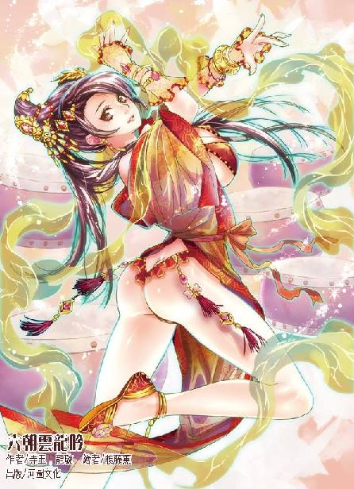

第55集·积毁销骨
汉国篇（7/28）
出版日期：2014-10-02
【本集内容简介】
汉国朝会时论及王哲与左武军大败之事，众人皆知是汉国天子为争权而旧事重提，只有程宗扬是真心想找出究竟谁才是幕后主使者，泄漏军机致使王哲就此殒命？
天子借由八校尉的职位笼络韩定国，偏偏韩定国是黑魔海的人，更是小紫迁怒的对象。程宗扬与卢景原想先下手为强，但韩定国将赴宴地点防范得滴水不漏、处处陷阱，让程宗扬与卢景束手无策。小紫依然不见踪影，只有与她形影不离的雪雪独自出现，更令程宗扬忧心不已……
※ ※ ※ ※ ※

封面人物：赵飞燕
“天子问，有什么生意能在三个月内赚得两三倍的利钱？”
左悺尖细的声音还在殿中回荡，几名中常侍一个个目瞪口呆，一时间殿内安静得针落可闻。
半晌唐衡才道：“蔡常侍去找天子借钱了？”
“你们怎么知道？”左悺道：“不过不是借钱。蔡常侍私下求见天子，说他夜观天象，山阳一带当出金砂，其值以亿计，求天子从内库拨一千万钱，由他去山阳采金，如果三个月内不见效，愿付首级。”
众人都围上前去，“他要去山阳采金砂？”
“其值数亿？还拿性命担保？”
“天子根本就不信他那一套，”左悺道：“什么山阳有金砂？山阳挖了多少年铁了，连根金毛都没见着。多半是他找到什么来钱的路子，想背着太后大赚一笔。所以天子让咱们打听打听，姓蔡的究竟有什么来钱的路子？那位程大夫，你不是做生意的吗？说来听听。”
众人齐唰唰扭过脸，殷切地看着程宗扬，好像他一张嘴就能蹦出金子来。
程宗扬心里直犯嘀咕，这老蔡越玩越大了，连天子都敢坑。难怪老头说汉国的太监都是疯子。
程宗扬躬身施礼，然后道：“此事下官要问问蔡常侍才是。”
左悺不满地板起面孔，“让你来就是因为你懂生意，若是要问蔡常侍，我们难道问不得？哪里还要找你？”
“左常侍有所不知。三个月内赚得两三倍的利息，别说我们汉国，就是天下也没有这等生意。若是赚钱如此容易，世间还不都成了商人？”
唐衡道：“你是说蔡常侍所谓做生意是假的了？”
“下官不敢如此说。三个月内赚得两三倍的利息，正经生意虽然没有，但有一种生意也许是能做到的。”
“什么生意？”
“投机。”
五人目光灼灼地盯着程宗扬。
程宗扬从容道：“当年七国之乱，都中公侯无不奉命从军，因事起仓促，只得向放贷之家借款。放贷之家以七国势大，成败未决，无人肯借。唯有无盐氏拿出巨资，向列侯放贷，利息以十倍计。此战若七国兵临洛都城下，则无盐氏血本无归。若战事拖延，十倍之利也所获无几。结果朝廷只用三月便平定七国，无盐氏坐收十倍之利。”
唐衡道：“这是赌博。”
程宗扬道：“唐常侍说的是，所谓投机，正是赌博。只是赌局有大有小，蔡常侍若是以此投机，此局当是极大，因此下官要见过蔡常侍才好判断。”
五人沉默良久，最后徐璜道：“我来安排，让你和蔡常侍见一面。但能不能问出什么，就要看你自己的了。”
“徐常侍放心。只要见到蔡常侍，下官定能看出他的底细！”
程宗扬信心十足的模样让众人都暗暗点头。唐衡、具瑗等人纷纷想方设法，怎么把闲杂人等都移开，让程宗扬和蔡常侍好好见上一面，弄清他做的是什么投机生意。
五位宫中最有权力的中常侍一起办事，可谓是雷厉风行，不到半个时辰，平常用于接待诸侯、宗室的显亲殿就被清理一空。接着徐璜亲自出面，把蔡敬仲请到殿内。
程宗扬已经等候多时，一见面徐璜就笑道：“这位程大夫是新任的常侍郎，前几日见过面的。听说蔡常侍精于器物，一直想向蔡常侍请教……”
这是五人商量好的理由，为了让程宗扬和蔡敬仲见面。徐璜准备了一肚子的言辞，打算昧着良心把蔡敬仲的马屁拍舒服了，让他跟程宗扬谈几句。结果话还没说完，蔡敬仲便道：“唔。那我跟他谈吧。”
徐璜一肚子的话都咽了回去。这蔡敬仲今天怎么改性子了？这么好说话？但他肯赏脸跟程宗扬交谈，徐璜求之不得，赔着笑脸道：“那你们好好谈，我还有点事。那个……小程啊，蔡常侍懂的多，你可要好好向他请教。用心些。”
徐璜怕耽误他们两个谈话，一路小跑地离开，还顺手把殿门关上了，好让他们安安静静认认真真地仔细交谈。
徐璜一走，蔡敬仲就从怀里掏出几张纸，“这是式样图。”
蔡敬仲把图纸递到程宗扬手中，拍着他的手，语重心长地说道：“实验室的事可得抓紧啊。”
“我知道，我知道。”程宗扬赶紧接过图纸，塞进腰包。
蔡敬仲一眼看见，“这是拉链？我来看看……”
程宗扬拦住他，“咱们先说正事——你这就开始借钱了？”
“是啊，咱们说好的。”
“那你也不能这么早啊。”
“不早点怎么行？”蔡敬仲道：“谁也不是几十万钱放身上对吧？这年头大伙都不容易，有些手头紧的还要卖房子卖地，你总不能想着今天开口，明天别人就把钱给你送来吧？总得给他们腾出来凑钱的时间对不对？”
这年头大伙都不容易——这话说得亏心不亏心？
“大哥，”程宗扬苦口婆心地劝道：“你这捞得也太狠了，别说鱼苗，连鱼鳞都不留。我说，你怎么还向天子借钱呢？”
“天子的钱也是钱啊。你说的那个实验室，我这两天又考虑了一下。一年一万金铢有点紧。一万金铢是两千万钱，我打算借一亿，算下来有五万金铢，头几年勉强能对付下来……”
“打住！一亿？你打算在汉国宫廷里捞一亿？”程宗扬压低声音叫道：“你想过没有，你从天子手里，从徐常侍、唐常侍、单常侍、具常侍、左常侍……这帮中常侍手里借一亿钱，然后拍拍屁股走人，他们会放过你吗？你跑到天边都没用！下辈子碰见都得咬你几口。江州刚打过一仗，我可不想因为这一亿钱，跟汉国北军的中垒、屯骑、射声再打一场。你把天子惹毛了，说不定连羽林、期门都给你派来。我们江州地方太小，真心抗不住啊，大哥。”
“你是担心善后？”蔡敬仲胸有成竹地说道：“放心，我都安排好了。”
“你怎么安排的？”
“我不是向天子请诏，去山阳采金吗？等借够钱我就走。山阳的铁官徒已经向朝廷几次请命，说矿上每年定额太高，而且铁官抢夺财物，草菅人命。我一到山阳，就把开采量加两倍，你觉得那些铁官徒会怎样？”
“现在就过不下去了，你再加两倍，那还不得反了？”
蔡敬仲抚掌道：“这就对了！铁官徒一反，头一个就得杀我，对不对？”
“那必须的！”
“好。到时候我就爬到房顶上朝北叩拜，痛哭辜负皇恩，无颜面见天子，然后——闭门自焚。”
程宗扬恍然大悟，“金蝉脱壳！”
“没错。我人都死了，还有什么好说的？本事再大，也不能找死人还钱吧？天子都没辙。宫刑？我已经割了。斩首？我都化成灰了。诛三族？我一个太监，全家早就死光光了。天子就是气不过，想找我鞭尸，他也得先找到尸体才好拿鞭子对吧？”
可不是，连鞭尸都鞭不了。程宗扬仔细想了一遍，这事除了缺了大德，别的办得还真是干净。卷了一亿跑路，连骨头渣子都不留。
“为什么要去山阳呢？”
“咱们不是缺个铁矿吗？”蔡敬仲道：“我想了一下，山阳的铁官徒已经忍了这么多年，说不定还能再忍下去，这可不行，必须得让他们站出来，为自己的利益抗争。我是这么考虑的，你看成不成——我琢磨着从星月湖大营借点人，帮他们起事，最好能成为首领。等朝廷火烧眉毛，我们再用江州的名义出面，装作什么都不知道，向朝廷表示，要把山阳的铁矿包下来。”
“朝廷怎么可能答应？”
蔡敬仲惊讶地问道：“为什么不答应？”
“山阳还乱着呢！”
“就是乱着才好答应——汉国当年和星月湖大营有仇啊！”
程宗扬一拍大腿，“我把这茬儿给忘了！”
“这么大个坑，江州愿意往里面跳，朝廷高兴都来不及。你想啊，朝廷一动兵，打的就是金山银海。正着急呢，有个傻子站出来拼命往坑里跳，要把这个坑给填平了，朝廷做梦都能笑醒。本来要花几亿钱打仗，现在不用花了，对朝廷来说，省的钱就当是赚了。运气好的话，咱们不但一文钱不用花，白白得个铁矿。说不定朝廷还会倒贴几个……”
蔡敬仲表情淡定，这种不知会引起多少血雨腥风的谋划，从他口中说出来，就像在讲述实验的步骤一样，绝对的客观冷静，不掺杂任何个人感情的因素。那些可能被波及的人命，在他眼中仿佛只是一串冰冷的实验数据。
程宗扬本来被他说得晕乎乎的，好不容易冷静下来。他沉默半晌，然后拍拍蔡敬仲的肩，“这事我知道了。你不是想看拉链吗？这个给你。”
程宗扬解下腰包，把里面的东西取出来，然后递给他，“你看，这是拉链，里面还有好几层。这个搭扣有意思吧？又方便又结实……有空琢磨琢磨这个，钱的事你就别操心了。”
蔡敬仲目光被那件腰包吸引，毫不在意地说道：“行。”
临走时，程宗扬道：“你是不是特别恨单常侍？”
蔡敬仲困惑地说道：“为什么？”
“你向别人借钱都是几十万，怎么到他那里变成二百万了？”
“我听说他刚卖了房子——要不我再借点？”
“千万别！”
刚才几位中常侍谈及蔡敬仲向大家借了多少钱，单超颇有些自负，似乎蔡敬仲向他借一百万，着实看得起他。程宗扬这会儿才明白，单常侍是自作多情了。蔡敬仲压根就没看他的人，完全是奔着他那钱去的。
程宗扬从显亲殿出来，五名中常侍都拥上前去，“怎么样？怎么样？”
程宗扬沉着脸道：“一文钱都别借给他！”
五名中常侍有些失望，接着又紧张起来，“我们已经借过钱的怎么办？”
“找他要！能要多少要多少。”
“他说的利息……”
“假的。我看全是忽悠。”
单超一提袍角，就要往殿里冲，众人连忙把他拉住，“息怒！息怒！”
单超涨红了脸，粗声大气地说道：“你们借得少是吧？我可是一百万钱！”
“不是钱多钱少的事，”徐璜劝道：“小心打草惊蛇！万一他知道咱们识破了他的伎俩，不肯还钱怎么办？慢慢来，这钱咱们迟早要讨回来。”
众人好说歹说，总算劝住单超，先稳住姓蔡的，然后把钱再慢慢拿回来。
蔡敬仲的计划不可谓不周密，但程宗扬还是决定要拆他的台。纵然他害的人跟自己没什么关系，可程宗扬希望他能把聪明才智都用到正经地方。他的才华用在这上面，不仅仅是浪费，也是犯罪。
※ ※ ※ ※ ※
从显宗殿出来，徐璜庆幸地说道：“若不是你，咱家这回可要被姓蔡的坑苦了。”
一想起自己刚才打算再借三十万混个高息的冲动，徐璜就不由暗呼侥幸。幸亏自己慧眼识英，找了个良材，要不然那二十万钱就肉包子打狗，一去不回了。
程宗扬道：“公公这样说就见外了，我看蔡常侍说话吞吞吐吐，言语不尽不实，就起了疑心。我们做生意最怕这种人，不管那生意是真是假，能不能赚钱，都沾不得了。”
“他哪里来的胆子，敢骗到天子头上？”
程宗扬低声道：“如果他是打算拿你们的钱给天子高息呢？”
徐璜一拍大腿，大骂道：“这该死的贼子！”
姓蔡的要真这么做，大伙的钱全到了天子手里，那还要个屁啊！到最后他讨好了天子，把大伙全给埋坑里了。缺德不缺德？
程宗扬道：“我听说皇后娘娘凤体不豫？”
徐璜道：“谁说的？根本没影儿的事。”
程宗扬尴尬地说道：“我听外边人一说，就当真了，还准备了点礼物，想献给皇后娘娘。”
徐璜来了兴趣，“什么礼物？”
程宗扬压低声音，“求子的仙符。”
徐璜眼睛一亮，“灵不灵？”
“是太乙真宗秘传的仙符，外面见不到的神物。据说是灵验无比。”
程宗扬一边说，一边取出一只玉盒。打开来，里面放着一张两寸来宽五寸来长的符纸。那符纸似革非革，通体火红，上面用金汁绘制着细密的符文。随着目光的移动，那些符文仿佛泛起粼粼的金光。即使徐璜对法术一窍不通，也能感觉到符中蕴藏着惊人的灵力。更与众不同的是，符纸顶端嵌着一条银链，链上还有几个豌豆大小的铃铛。
这样的灵符闻所未闻，单看绘制的手法，制符之人就绝非凡俗，很可能是某位大有道行的长老，甚至出自太乙真宗教御之手。
徐璜只觉盯着符文的眼睛一阵阵发烫，赶紧移开目光，问道：“此符是从何处求来的？”
“太乙真宗的卓教御如今正在北邙，我专门托了关系，花重金求来此符。徐公公，你看这东西真不真？”
“绝对真！要有一处假的，我徐某立刻抉了自己这对眸子！”
程宗扬舒了口气，“这就好。我不识货，就怕花了钱还被人骗了。”
“你花了多少钱？”
“一千金铢。”
这就是二百万钱啊，够单超再卖回房子了。
徐璜想说什么，又咽了回去，赞赏地拍了拍他的肩，“你在这儿等着，咱家这就往长秋宫报喜去！”
不到一刻钟，徐璜就一路小跑地回来了，“快！快！快！娘娘要召见你！”
程宗扬丝毫也不意外，如果皇后娘娘见到符上的银链还无动于衷，除非徐璜没有把符送到她手里。他一本正经地扶了扶进贤冠，昂首阔步往长秋宫走去。
赵飞燕，我来了！
※ ※ ※ ※ ※
长秋宫比北宫的永安宫规模小了许多，但在南宫仅次于天子寝宫，规模远在其他妃嫔居住的宫殿之上。身着曲裾的宫女微微低着头，垂手贴在身前，迈着细碎的步伐引路。脚下的地板浸过桐油，光亮得能照出人影，宫女穿着白布袜的双足走在上面，没有发出丝毫声响。
殿内垂着一幅水晶帘，微风乍起，透明的水晶帘轻轻晃动着，发出悦耳的声响。
徐璜在水晶帘外跪下，尖声道：“奴才徐璜，叩见娘娘。”
隔了一会儿，帘内才有一个纤软的声音歉然道：“又劳烦你跑了一趟……徐常侍，辛苦你了。”
“这是奴才的本分，不敢称辛苦。”
帘内的女子迟疑了一会儿，轻声道：“那张符，我很喜欢……我想和他说几句话，可以吗？”
“是，奴才告退。”
娘娘要问求子的事，当然不好有外人在场，徐璜爬起身，朝周围的宫女使了个眼色，带着众人悄悄退下。
程宗扬心里嘀咕，赵飞燕可是史上有名的妖女，姐妹两个专宠后宫，把天子迷得神魂颠倒，留下无数风流传说，还有燕啄皇孙的恶名，怎么说起话来怯生生的，活像个受委屈的小媳妇？
帘内沉默良久，那个声音道：“你……可以进来吗？”
程宗扬听得莫名其妙，这妖女什么意思？让我进去？难道有什么诡计？等我一进去，她就大叫“非礼”？没道理啊。想给我来个美人计？我最不怕的就是这个！求都求不来呢。
第一次见面，虽然自己六百石的官职惨了点，但绝不能让人给看扁了。程宗扬挺了挺胸，摆出气宇轩昂的气势，抬手掀开水晶帘，昂首进入帘内，然后像触电一样立刻俯下身，以头抢地，口中道：“微臣叩见陛下！圣上万岁，万岁，万万岁！”
帘内立着一个英武的年轻人，赫然是那位年轻的六朝共主，大汉天子。
刘骜穿着劲装，头戴皮质的弁冠，一手扶着天子剑，他扫了脚下匍匐的小官一眼，然后对旁边的女子道：“你要不放心，就去看看。”
那女子轻声道：“臣妾……不好出宫。”
“怕什么？宫里又不是只有江女傅一个信得过的。这宫里所有人都是你的奴婢，你尽管指使他们。谁要不听话，你想笞就笞，想杖就杖，杖毙也没关系。”
“……是。”
“让你妹妹入宫，你怕有人拦她，你自己去总是没人敢拦吧？”刘骜用呵哄的口气道：“我今天和张放约好了，要去射猎，他新得了一条狗，据说长着两只翅膀，飞起来比鹰都快，要不然我就陪你一起去。”
“臣妾知道了。”那女子轻声道：“多谢陛下。”
刘骜吩咐旁边一名年轻的宦者，“你陪皇后娘娘一起去。”
那宦者脖子一梗，“我不去。”
刘骜大怒，“朕的话你也敢不听！”
宦者道：“我也要看狗。”
刘骜没好气地说道：“下次带你去。你这次敢不去，我就把你打发去守陵，让你一辈子连只猫都见不着。”
那宦者嘟着嘴不再作声。
刘骜道：“富平侯还在等着我，我先走了。你要是喜欢，在外面多待一会儿也无妨。别人问起来，就说跟我一起出去的。母后不高兴也不会骂你。”
“是。”那女子屈膝跪下，双手指尖相对贴着地面，戴着珠翠的螓首轻轻叩下。
刘骜不悦地说道：“你怎么又跪下了？朕最不喜欢别人跪来跪去的。赶紧起来。我走了。”
刘骜说完就风风火火地离开。他没有从大门出去，而是绕到里面一扇屏风之后，然后就没了声响。
殿内安静片刻，那宦者道：“娘娘刚才跪是对的。天子不喜欢别人跪他，但要是有谁不跪，他更不高兴。”
“妾身知道了。”
“娘娘和天子说话，自称臣妾是对的。但和我们这些下人说话就不能自称妾身了，自称我就可以，若觉得不够雅驯，称吾也可以。”
那女子道：“我知道了。”
宦者满意地说道：“这就对了。哎，这里还有个人在跪着呢。”
程宗扬直想骂娘，自己跪了半天了，天子从头到尾就没跟自己说过一句话。好不容易等天子走人，他们两个又聊上了，自己这么个大活人，跪着也有五尺来高，他们就不觉得碍眼？
那女子连忙道：“对不起——程大夫，请平身。”
宦者道：“娘娘不用对臣下说‘对不起’，他是臣子，跪死都是应该的。”
妈的，敢情跪的不是你啊！有种你来跪一个，你小子跪到天亮，我皱一下眉头就不是好汉！
“公公说的是，微臣多跪一会儿也是应该的。”程宗扬说着顺势起身。开玩笑，万一这娘娘听不出来什么是客气话，真让自己多跪一会儿就傻了。
虽然很好奇这位与史上四大美女齐名的赵飞燕究竟有多美，但程宗扬还是没敢直勾勾把目光放到皇后娘娘脸上。借着起身，他目光顺势上移，先看到一条曳地的长裙，鲜红的丝绸上绣着金黄的凤纹，往上是一条衣带，用金丝镶嵌着攒成花形的珍珠、雕刻着凤鸟的白玉，还有一颗龙眼大的红宝石。
她双手放在身前，长长的衣袖掩住手指，只能看到袖口精致而繁丽的刺绣。臂上缠绕着轻云般的臂带，肘后悬着一只香囊，囊上绣着象征多子的石榴。宽大的衣襟微微隆起，上面绣着连绵的合欢纹饰。再往上，是一抹雪白的玉颈，然后是小巧的下巴。
程宗扬目光停了片刻，才移到她唇上。那只红唇柔软而莹润，衬着如雪的肌肤，红艳得令人惊心动魄，犹如一朵娇美的菡萏。
程宗扬停下目光，不敢再往上移——作为六百石的官员，看到这里都有些逾矩了，再往上看就是找死。不过单看这一唇一颌，面前这女子就已经堪称绝代尤物。
红唇轻分，流淌出一串悦耳的声音：“程大夫，谢谢你拿来的仙符。”
宦者插口道：“娘娘，你不用……”
“这是臣份内之事，”程宗扬打断他，“怎敢让娘娘相谢？”
宦者接口道：“他说的对。”
赵飞燕有些尴尬地沉默了一会儿，确定那宦者不会再开口，才柔声道：“我听说，此符是从上清观卓教御那里求来的，是吗？”
“是。”
“那这符上的银铃……”
“什么银铃？”宦者伸头去瞧。
程宗扬咳了一声，“据臣所知，听闻是为娘娘求的仙符，上清观一位刚入观的姑娘特意献出此铃。”
那只红唇微微抿紧，流露出一丝激动。
“这银铃很一般嘛。”宦者道：“杂色银子，值不了几个钱。程大夫，你是不是没掏够钱啊？”
死太监！你这是在打娘娘的脸你造吗？程宗扬微笑道：“敢问公公贵姓？”
宦者脸一板，“这是你该问的吗？你一个外臣，打听我的名字做什么？想巴结我？外臣结交内侍是死罪你知不知道？要不然是我得罪了你，你想报复我？我一点都不怕你知道吗？你才六百石你知道吗？六百石在宫里一抓一大把，你知道吗？”
赵飞燕开口道：“中行说。”
宦者立刻躬身，“娘娘。”
“我想和程大夫说几句话，可以吗？”
“行啊。”中行说闭上嘴，侧了侧身，摆出一副洗耳恭听的架势。
过了一会儿，两人都没开口，只用眼睛使劲看着他，中行说终于明白过来，“让我回避是吗？好吧。我就在外面，娘娘想叫我，声音大一点就可以。”
中行说走到程宗扬面前，用脚在他身前划了一条线，严厉地说道：“我警告你！不得越过这条线！明白吗？”
程宗扬看着那条线，终于明白当年汉宫众人为什么拼着亡国的风险，也要把这孙子打发到匈奴去，这货实在太咶噪了！当着天子、皇后的面都敢指手划脚，换成几位中常侍还不得被他喷死？
※ ※ ※ ※ ※
程宗扬抬起眼，看向那个倾国倾城的美人。赵飞燕双十年华，一双眼睛微微发红，似乎刚哭过，却平添了几许风流妩媚，水灵灵的眼波流动间，仿佛有着千言万语。
“程大夫，”赵飞燕充满希冀地轻声问道：“你见到她了吗？”
程宗扬直接了当地回道：“是的。”
“上苍……”赵飞燕双手合什，几乎喜极而泣。过了一会儿才低声道：“合德还好吗？”
“令妹还好，只是想见娘娘。”
“我要去见她。”
“上清观在北邙，山路崎岖，不若由臣下护送合德姑娘入宫。”
“不要！”赵飞燕连忙止住他，然后自失地笑了笑，“幸好她没有入宫，不然我会后悔一辈子的。”说着她站起身，“走吧。”
“从这里走？那中行公公……”
赵飞燕嫣然一笑，“你想带他吗？”
“可是娘娘若是出宫，身边怎么能没有伺候的人？”
“我以前也是平民女子，哪里没人伺候就走不得呢？”
开玩笑，哥可是有人追杀的人，还指望你能带几个高手路上保护哥呢。万一撞上黑魔海的人，你就是个白送的大礼包，你知道吗？
赵飞燕看出他的犹豫，迟疑道：“要不然……知会一下单常侍？”
程宗扬长出了一口气，单超修为如何，自己看不出来，但瞧着就像是很能打的样子。一旦有危险，让他来当炮灰也放心些。
中行说在外面叫道：“我都听见了！你们不想带我，我还不想跟你们去呢！告诉你们！只要出了长秋宫，不管什么事都跟我没关系！天子问起来，我就说我什么都不知道！”
“咱们这算说好了，”程宗扬道：“你要改口我弄死你啊！”
赵飞燕抿嘴一笑，“程大夫，请稍等。”
赵飞燕进入内殿，片刻后再出来，面上已经多了一幅轻纱，只露出一双水汪汪的美目。她身上的凤袍换成曲裾，身后结着长长的丝带，贴身的衣物勾勒出纤美的身形，娇柔得仿佛一口气就能吹起来，身体就像腰后的丝带一样轻盈。
她头上凤钗、珠翠都已取下，长发挽成一个鬟，用一条丝带扎住，然后在外面披上一件罩衣，掩住了婀娜的身材。
赵飞燕美目微微一转，示意他跟上，然后走到屏风后。程宗扬压根没理中行说划的那条线，直接跨了过去。
屏风后果然有一个甬道入口。虽然人生地不熟，但总不能让皇后娘娘在前面带路，程宗扬自告奋勇，当先进入甬道。
甬道颇为宽敞，虽然深入地下，却丝毫没有气闷的感觉，里面点着油灯，能看到甬道是用砖石砌成，上面呈拱形，有些地方两边还建了耳房。
走了一盏茶工夫后，身后传来一个声音：“右。”
程宗扬没听明白，拐了个弯才看到甬道分出一条岔道。他依言往右走去，一刻钟之后，甬道到了尽头，向上沿着台阶走了一两丈高，来到一处小房子里。
程宗扬原以为这条甬道直通宫外，出来才发现两人走了这么长一段路，竟然还在长秋宫内。
程宗扬忍不住道：“不是到宫外的吗？”
“不可以的。”赵飞燕道：“这些便道都是各宫自己用的。”
原来只是为了宫内通行而设的便道，并不是什么天子专用的密道，难怪自己一个外臣，也能堂而皇之地进来。
屋内守着几名小黄门，见到皇后娘娘过来，都连忙跪下。赵飞燕吩咐几句，一名小黄门飞也似的去找单超。片刻后，单超闻讯赶来，俯身向娘娘行礼。
天子已经交待过娘娘出宫的事宜，连出行的车马都已经安排停当。那辆马车外表看起来毫不起眼，打开车门，里面的装饰却是华贵之极。可惜程宗扬也就是看看，如果敢跟皇后娘娘同乘一辆马车，那完全是奔着宫刑去的。
※ ※ ※ ※ ※
北邙，上清观。
静室内安静得像另一个世界，赵飞燕跪坐在席上，望着案上一株新剪下来的月季，想起妹妹这一路经历的危险，一时间柔肠百转。如果说最开始她是因为自己在宫中孤立无援，迫切想让妹妹入宫，姐妹俩同心在后宫稳住脚步，那么现在她宁愿妹妹留在宫外，平平安安过完此生。即使有一天自己万劫不复，也好留一份寄托。
赵飞燕握了握微凉的指尖，收回心思。她私下出宫，在外面用的是富平侯家人的名义，守门的女童告诉他们，卓教御正在与几位客人见面，暂时无法出来会客，请她在静室等候。那位程大夫似乎和观里的人很熟，问了几句，便自行去寻合德，说是请她前来与自己相见。至于单超等人，赵飞燕不愿让他们见到自己与妹妹相见的情形，把他们留在了外面。
望着那株娇艳欲滴的月季，赵飞燕渐渐静下心来。忽然房门被人拉开，一个女子道：“这里还空着呢，我们就在这里等吧。”
几名妇人自说自话地涌入室内，她们遍身罗绮，一个个珠光宝气，打扮得花枝招展，一进来就叽叽喳喳说个不停。
原本平静的静室一瞬间变得如同喧嚣的街市，赵飞燕只有暗自苦笑。
前面一个女子对她说道：“你也是来见卓教御的吗？放心，我们不会抢了你的位次，只是这里安静，过来歇歇脚。”
赵飞燕略微欠了欠身，然后低下头去。
平城君见她不作声，也觉无趣，转头对同伴道：“来这边坐。咦，这盆花不错，正好一人一朵。”
几名妇人纷纷伸手，争抢着将那盆月季采摘一空，各自簪在鬓侧，攀比说笑了好一阵子，才各自坐下。
几人说了些家长里短的闲话，听得出都是都中勋贵人家的妇人，为首那个叫平城君——这个封号赵飞燕依稀在宫里听过，似乎是自己晋封后位时，前来拜见的封君之一。当时只远远磕了个头，连相貌都未看清楚，没想到竟是如此饶舌的一个妇人。
平城君忽然神秘地说道：“你们听说过那位皇后娘娘的事吗？”
赵飞燕微微一怔，便听到旁边有人接口道：“又怎么了？”
平城君吃吃笑了两声，“我跟你们说，你们可千万别往外传。”
“说吧，说吧。”
“那位皇后娘娘啊，以前是个舞姬……”
“这有谁不知道的？”
“我娘家三叔的四外甥的连襟的远房小姑上次来，悄悄跟我说起来，她那个男人原来在乐津里当里长……跟那位娘娘好过。”
赵飞燕惊愕地看了她一眼，接着面纱下的玉颊涨得通红。
众人纷纷道：“真的假的？”
平城君得意洋洋地说道：“哪里会有假的？她男人以前在乐津里，里面的歌舞姬都归他管。那位娘娘因为生得漂亮，被她男人看中了，专门叫过来，在屋内服侍了几日。就因为这个，那位娘娘当上皇后，差点没把她男人吓死。她看着自家男人连日魂不守舍，一番追问才问出来。”
“竟有这种事？”
有人插口道：“你们家也养着舞姬，还不知道那些小娼妇是个什么情形？本来就下贱，再有三五分模样，还不是由着人受用？”
“都说那位娘娘生得美，不知怎么个模样？”
平城君道：“她男人本来还不肯说，我那个远房妻妹拧着她男人的耳朵问了一夜才问出来……”
“快说！快说！”
平城君压低声音，“她男人说，那位娘娘模样长得漂亮不用说了，那身子白生生的，又软又嫩，跟没有骨头一样，什么花样都摆得出来。她男人说，有回喝醉了酒，弄了她一夜，前后换了十几种花样。据说，那位娘娘屁股里面有一个蝴蝶状的红印，从后弄她的时候，屁股一晃一晃，那蝴蝶就像在飞一样。”
众女都掩口笑了起来，赵飞燕脸色却变得煞白。
笑了一会儿，有人悄悄道：“我还听说，那位娘娘其实是被爹娘扔掉的，后来被一个无赖捡回来养着。刚十二岁，就被那个无赖给糟蹋了。”
“可不是嘛。都说她那个养父是个无赖，小姑娘还没长成就破了她的身子，伤了天癸。要不入宫一年多了，怎么还没怀胎的消息呢？”
“这算什么？我还听说那位娘娘是个白虎……”
“那不是克夫吗？”
“可不就是嘛，”有人煞有介事地说道：“听说入宫之前，死在她肚子上的男人就有好几个了。”
“那天子……”
“天子可是真龙下凡，当然能镇得住那白虎。不过子嗣上可就艰难了。”
这话说得十分有理，众女纷纷附和。忽然有人道：“平城君刚才说蝴蝶记，我突然想起来了。我家那死鬼，上次拿了幅春宫图回来……”
众女哄笑起来，“春宫图啊，好个有情有趣的夫君。”
那女子也笑了起来，“你们就笑吧，我就不信你们没看过。”
“好了姐姐，那春宫图怎么了？”
“那春宫图上是个光溜溜的美人儿，手脚都被捆着，趴在马鞍子上，被几个胡人从后面弄。屁股缝里就有一只红红的蝴蝶……”
“不会吧？那春宫图是哪里来的？”
“我家那死鬼去年从边塞回来，说是从一个杂胡部族中得来的。图上的美人儿是一个从洛都到边邑寻亲的舞姬，被胡人掳走。那些胡人弄得高兴，还让被掳的画师画了那幅图。”
“后来呢？”
“听说那舞姬后来被卖到别处，没了音讯。”
“该不会就是那位皇后娘娘吧？”
“那可保不齐。若是有人拿那幅图跟皇后娘娘比照一下，说不定宫里就要出大乱子呢。”
有人愤愤不平，“这种人也能当上皇后？”
“天子到底是年轻，见到美色就晕了头。”
“太后娘娘也是，怎么就由着天子的性子胡来？”
“太后也不容易……”
赵飞燕眼前阵阵发黑。她自知出身低微，全倚仗天子的宠爱才登上后位，因此入宫之后循规蹈矩，深居简出，极少与洛都的贵妇见面，连宫中的婢女、内侍也刻意善待。直到此刻，她才知道什么叫众口烁金，积毁销骨。自己遇见天子之前，虽是舞姬，却是清清白白的良家子，谁知会被这些妇人在背后如此诋毁？尤其是自己身上的标记，除了天子，哪里有旁人知晓？
是了，多半是那些侍浴的宫女……赵飞燕拧紧手指，几乎涌出泪来。自己屡屡厚加赏赐，她们怎可如此！
一名道姑进来，竖掌向众人施礼，笑道：“已近夕时，观中开了斋饭，还请诸位赏脸。”
“观中的斋饭自然是要叨扰的，”平城君招呼众人，“走了走了。”
一众女子纷纷起身，不一会儿就人去室空。唯有赵飞燕坐在原处未动，那道姑也没有催促，只悄悄合上门。
一个声音响起：“那些只是无知恶俗的多舌妇人，娘娘何必理会她们的胡言乱语？”
赵飞燕低着头，良久才道：“吾父虽然为人粗鄙，好酒无行，却非是衣冠禽兽之徒。”
“仗义每多屠狗辈，负心总是读书人。”程宗扬道：“别看那位平城君说得嘴响，扒开来其实臭不可闻。子烝母，甥侵姨，妻咒夫——哪一条都是天地不容的死罪。无非是帝王贵胄、郡国封君，无人敢惹罢了。”
这样的猛料突然爆出来，赵飞燕惊愕地抬起眼，露出难以置信的目光。
“没错。就是那位平城君。”程宗扬索性说开了，“她妹妹续弦给了赵王，如今是赵王后。赵王刘彭祖年事已高，赵王后却是青春年少——那位赵太子色胆包天，不仅淫及后母，连平城君也是入幕之宾。”
当初从平城君身上搜出诅咒的木偶，惊理和罂奴暗中留意平城君的行踪，居然发现她与赵王太子通奸的勾当。接着顺藤摸瓜，又发现赵太子与继母赵王后关系非同寻常。而那只诅咒的木偶，就是赵太子、赵王后、平城君三人相互勾结，暗中诅咒赵王刘彭祖的道具。这些事一旦暴光，三人最好的结果也是禁锢终生。众所周知，吕后杀起宗室从不手软，若此事大白于天下，三人都难逃一死。
赵飞燕陡然得闻秘辛，却没有目光一亮，觉得拿住了平城君的把柄，要给这个背后诋毁自己的贱人一个好看，反而惊得花容失色。
程宗扬心下大奇，赵飞燕在史书中的名声可是不堪得很，妖媚惑主，淫乱后宫，再加上燕啄皇孙的恶名，怎么本人纯洁得跟只小白兔似的？一路谨小慎微，唯恐行迟踏错——你这都是装的吧？
赵飞燕惊慌地说道：“这些事我不想知道，也不想听见。”
装吧装吧，我看你还能装到什么时候。程宗扬躬身道：“是，臣知道了。”
赵飞燕微微松了口气，随即道：“合德呢？”
“请娘娘稍候。”
程宗扬打开房门，向外面知会了一声。片刻后，门外人影微闪，一个少女慢慢走入静室。
赵飞燕情不自禁地站起身，接着泪珠一滴一滴落了下来。虽然戴着面纱，赵合德仍一眼就认出了她的身份，叫了声“姐姐！”便扑过来抱住她。姐妹俩紧紧拥在一起，痛哭失声。
程宗扬拉上静室的房门，看了眼立在门外的卓云君。卓云君脸上带着温婉淡雅的笑意，与他目光一触，却瞬间露出一丝惊喜，“主子，你的伤势……”
“正要找你试试呢……”
程宗扬低笑着展臂搂住她的身子，把她打横抱了起来，走入旁边一间静室。
※ ※ ※ ※ ※
姐妹俩痛哭一场，渐渐收住眼泪。赵飞燕用丝帕拭去妹妹的泪水，拉着她的手端详半晌，然后展颜笑道：“真的长大了呢。”
她搂住妹妹的肩，像小时候那样把妹妹搂在怀里，柔声道：“阿爹可好？”
“还好。就是常常喝酒。”赵合德没有提及父亲被人殴打的事，只道：“有时候喝醉了，还是跟人吵架。”
“跟以前一样呢。”赵飞燕语带惆怅地轻叹道，然后打起精神，“给你们的钱，收到了吗？”
“收到了。可爹爹……”赵合德欲言又止。
“爹爹怎么了？”
“爹爹……”赵合德声音越来越小，“……嫌自己没有身份……”
赵飞燕沉默下来。皇后之父封侯本是汉国的惯例，但自己甫一出生就被父母抛弃，生父已经无从知晓，养父又是市井之徒，在朝中无人问津。结果朝廷上下都像忘了此事一样，对封侯之事绝口不提。而天子刚刚秉政，自顾尚且不暇，自己又怎可因为家事去劳烦天子？
迟疑间，她听到合德细如蚊蚋的声音：“姐姐……我……我不想入宫。”
赵合德伏在姐姐怀里，小声道：“我真的不想入宫……大门那里画的鸟兽好大……好吓人……像是要把人吞掉一样……我看到就害怕……”
赵飞燕拥紧妹妹，隔了会儿道：“那便不入宫了。”
合德开心地笑了起来，她扬起脸，高兴地说道：“那我明天就回去！爹爹不会做饭，这些天总在外面吃，只怕早吃够了。”
“不。你不能回去。”赵飞燕叮咛道：“你哪里都不要去，唯有待在这里，才能保得平安。”
赵飞燕一边说一边拉起衣袖，从腕上褪下几只赤金手镯，戴到妹妹腕上。
赵合德意识到姐姐的慎重，不禁有些担心地说道：“可是爹爹……”
爹爹虽然称不上慈爱，但终究是他把自己姐妹养大，于己有养育之恩。如果真是有危险，总不能置之不理。
“爹爹不会有事的。”赵飞燕抚着她的长发道：“我担心的是你。”
“因为有人要害我吗？”
赵飞燕用沉默回答了她。
“为什么？我又没害过别人……”赵合德越说越委屈，泪珠一连串地滚落下来。
赵飞燕轻轻拍着她的身子，“再忍忍啊……”
“可我想回家……”
赵飞燕半是玩笑半是认真地说道：“你不怕阿爹骂你？”
“阿爹最多也就是骂我。他若不高兴，我逗他开心就是了。”
赵飞燕拥着妹妹，心里一阵酸楚。是啊，虽然阿爹脾气暴躁，对她们姐妹动辄喝骂，可到底不会故意加害她们。
“再忍一忍。终有团聚的时候……”赵飞燕岔开话题，笑道：“妹妹是个有福气的，我在宫里提心吊胆，没想到妹妹竟遇到了卓教御。不知江女傅可好？”
“嬷嬷受了伤……”
赵合德断断续续讲了自己这一路的经历，如何辞别爹爹，如何与江女傅一同来到洛都，如何躲避那些心怀不轨的盯梢者，甚至不得不改道易容……其中自然少不了提到那个年轻人。
虽然赵合德隐瞒了许多，赵飞燕仍听得惊心动魄，低叹道：“此番我们姐妹能够相见，还要多谢谢程大夫。”
“他……”赵合德撇了撇嘴，低下头小声道：“……不是个好人。”
赵飞燕无奈地说道：“他若是那种‘好人’，又哪里会相助我们姐妹呢？”
赵合德吃惊地睁大眼睛，“为什么？难道……难道我们是坏人吗……”
赵飞燕眼中流露出几分伤感，“我也不知道自己做错了什么……”
良久，赵飞燕直起腰，重新整理了妆容，展颜笑道：“此地比洛都城内可要安稳得多，能把你托付给卓教御，我也好放心了。”
※ ※ ※ ※ ※
静室的屏风后弥漫着香腻的气息。名动洛都的太乙真宗女教御此时宛如一只白羊，温顺地伏在茵席上。她秀发散乱，玉体香汗淋漓，那只白馥馥的雪臀圆圆耸起，雪嫩的臀缝儿间含着一汪春水。
程宗扬伏在她背上，笑道：“如何？”
卓云君媚眼如丝地娇喘道：“主子比以往又厉害了几分……真的是伤势尽复了呢……”
程宗扬心情大快，从太泉古阵开始，丹田的伤势就一直纠缠着自己，时刻都要小心维持丹田气轮的平衡，那感觉就像怀内揣着个炸弹，指不定什么时候就会爆炸，把自己炸个粉身碎骨。
偏偏丹田的伤势与生死根、阴阳鱼纠缠在一起，非是药石能解，连死老头都束手无策。没想到古墓一番散功重铸，却让生死根、阴阳鱼与自己的丹田融为一体，不仅解除了自己的心腹大患，反而因祸得福，令自己一直停滞的修为也突飞猛进。如今自己已经触摸到新境界的边缘，随时都有可能跨越界限，攀升至第六级通幽的境界。
六朝修为中最高的第九级入神，属于传说中的存在，已经很久没有听说有人能踏入此境。第八级至臻境的存在也极为稀少，此前世间公认至臻境高手唯有王哲一人。王哲殒身大漠之后，第八级的存在也已经空缺。再往下的第七级归元境同样凤毛麟角，每一位都堪称宗师。
在六朝，第六级通幽境便属于一流高手，也是六朝江湖最为中坚的力量。普通宗门能拥有一名六级修为的强者，便足以称雄一方。而六级强者的多寡，也代表着一个宗门的实力。太乙真宗号称天下第一宗门，除了一个修为遥遥领先的前任掌教，几位六级通幽境的教御也是其底气所在。
一旦自己能够跨入通幽境，就至少有了自保之力——除非像身下的卓美人儿那样倒霉，跟人拼了个两败俱伤，被自己捡了便宜。
不过这个便宜还真不错……
程宗扬搂着卓美人儿翻过身来，让她仰身躺在茵席上，然后将她双腿拉成一字马，让她敞露着那只水汪汪的凤眼美穴，双手扶着自己的阳物纳入体内。
卓云君挺起腻穴，在他身下婉转迎合，浪叫声不绝于耳。她的叫声在静室内回荡着，室角一只禁音符光泽微闪，将声音的波动消湮无痕。
“主子……奴婢不行了……呀……”
门上的禁音符忽然亮了起来，示意有人来访。
程宗扬狠狠顶了两下，然后放开手。卓云君搂住他的腰身，玉颊留恋地贴在他胸口，一双雪滑的丰乳汗津津贴在他身上，随着剧烈的心跳柔软地滑动着，被人揉弄过的乳头像玛瑙一样红艳。她扬脸一笑，然后张开双臂，委蜕在旁边椅上的丝袍无风而动，像被人拿起一样飘扬起来，卓云君手一举，便套在身上，接着衣带灵蛇般飞起，绕在她腰间。卓云君用丝帕抹去脸上的汗水，随手一挽，扎住散乱的长发，接着曲指一弹，一点火光从指间飞出，点燃了室角一支檀香。
卓云君一边绕过屏风，一边扬起衣袖，在空中轻轻一挥，弥漫在室内的香腻气息被一扫而空，取而代之的是一股优雅宁静的檀香气。
卓云君走到屏风前，在一只蒲团上屈膝坐下，神态已经变得从容自若，眉眼间再没有丝毫媚意，让人无论如何也想不到她除了一条薄薄的丝袍，里面的胴体便是一丝不挂。
门外一个柔婉的声音响起：“有扰卓教御。”
卓云君淡淡道：“无妨，请进。”
※ ※ ※ ※ ※
赵飞燕终究放心不下，带着妹妹亲自见过卓教御，以富平侯家人的名义将妹妹托庇在上清观，求卓教御代为照应。
卓云君自无不允，连赵飞燕赠送的金臂钏也没有推辞，只是转手又赠给了赵合德。
赵飞燕放下一桩心事，带着单超等人离开上清观，返回洛都。她不愿旁人见到妹妹，只让赵合德送到静舍出口，嘱咐道：“你诸事多加小心，切不可轻易表露身份，若是有事，便告诉程大夫，好让他知会我。”
赵合德送别姐姐，回去又大哭一场，好在她自小生活的环境远谈不上优裕，上清观远离尘世，虽然山居多有不便，却有着难得的宁静，渐渐也就安静下来。
卓云君感叹道：“真没想到，这位汉国的皇后，居然是个如此柔婉的绝代佳人。”
程宗扬没有与单超等人一同回洛都，而是留在观中。他一边翻着林清浦用水镜术传来的账册，一边说道：“你以为她是什么样的？”
“平常来往观中的，都是城中贵妇，提到这位皇后，除了讥讽就是嘲笑，要不就是骂她狐媚惑主，心如蛇蝎。奴婢在观中多日，还没有听到有人说过她一句好话。”
程宗扬抬起头，“说她的人多吗？”
“不是多，而是只要闲谈，都有人提到她。”
“一句好话都没有？”
卓云君笃定地说道：“没有。”
这就有些邪门了，常言道：秦桧还有三个朋友——死奸臣躺枪了——赵飞燕贵为皇后，居然没有一个人说她一句好话，这口径实在太统一了。而且来往上清观的虽然都是贵妇，但真正见过赵飞燕的绝对不会太多，关于她的流言蜚语却已经闹得满城风雨，甚至还出现无数演绎，这事怎么想都透着一股蹊跷。
“她出宫时连一个亲信都没带，只随便请了一位中常侍随行，”程宗扬道：“看来这位皇后无论在宫里还是宫外，都没有一个心腹。”
卓云君跪在他身后，慢慢给他揉着肩，“江女傅呢？”
“让我看，江映秋多半是天子的心腹，谈不上是她的亲信。”程宗扬说着拿起书刀，在竹简上刻下一个名字：闻清语。
“这位闻姨似乎在汉国有点身份，想办法打听一下。”
“主子可是遇到了黑魔海的人？”
“没错。”程宗扬简略说了前日的经历，然后道：“他们倒不是想杀我，要不然我也没那么容易逃过去。”
卓云君凝眉道：“建威将军吗？”
“你知道他？”
“奴婢方才所见的访客中，有一位是射声校尉陈升的夫人，陈夫人在闲谈中提及府中这几日邀请建威将军作客，府里都在为此忙碌，她不耐烦扰，才入山小住。”
“请人作客有什么麻烦的？”
“她说那位建威将军规矩极大，昨日便派人入驻宴客的小园，连她们自家的仆人出入都要盘查。她索性把整个校尉府都丢给陈校尉，由得他们折腾。”
程宗扬推开账簿，“确定是射声校尉？”
卓云君回想了一下，“是射声。”
“我立刻回洛都。”
※ ※ ※ ※ ※
卢景宛如一片树叶从高大的桐树上飘落下来，接着身影一闪，掠入暗巷。
程宗扬警觉地看着巷口，见到卢景掠下，立即问道：“怎么去了这么久？府里情况如何？”
“里面看得极严。”卢景道：“只勉强看到园中似乎有一个小湖，周围每隔几步就有人守着，我试过几次也没找到机会，只好退了出来。”
程宗扬已经试过，结果连宴客的小园都没能摸到，就险些露了行藏。射声校尉的府邸并不算宏伟，里面却入驻了大量军士，想瞒过他们的眼睛潜入园中，可以说难比登天，即使以卢景的身手能潜入其中，也难以存身。
离宴请还有数天时间，校尉府中的看守只会越来越严密，到时候恐怕连只苍蝇都飞不进去，更不用提去刺杀赴宴的主宾。难道只有在路上下手了？
卢景道：“先弄清里面的情形，才好再想办法。”
程宗扬抬头往周围看去。射声校尉是北军八校尉之一，作为驻守京城的八支常备军之一的主将，相当于二千石的官员。二千石在地方上堪称封疆大吏，在洛都却是数不胜数，以至于朝廷中要把二千石分成中二千石、真二千石、二千石和比二千石。因此射声校尉的府邸也不是十分起眼，周围比它高的建筑比比皆是，只要找一处楼阁，俯瞰校尉府并不是难事。
卢景看出他的打算，有些没好气地翻了个白眼，“不用看了，邻近的楼阁我刚才已经去过，能看到校尉府的位置都有军士看守。姓韩的肯定是属耗子的。”
程宗扬望着远处一座楼阁，笃定地说道：“我知道一个地方，绝对没有军士敢进去。”
※ ※ ※ ※ ※
一个时辰之后，两人如愿以偿地登上楼阁，朝相邻的里坊望去。隔着重重屋脊，只能隐约看到校尉府的轮廓。那座府邸位于坊南，紧邻着坊外一条小河。府邸呈长方形，最南端是一座池苑，规模虽然不大，却有一座亩许大小的池塘，只是夜色已浓，看不清更多的细节。
程宗扬扭过头，正准备开口，却见卢景一脸古怪地看着他。程宗扬愕然道：“怎么了？五哥。”
“这才几天工夫，你就勾搭上了襄城君府里的丫鬟？”
程宗扬干笑道：“没有的事，误会误会。”
卢景翻着白眼道：“刚才那小婢叫什么？红玉？瞧她看你的眼神，要说你们俩没点啥，我也得信啊。”
“五哥，你误会了，我们就是一般的交情。”
“一般的交情会让你不声不响地登楼？”
“刚才不是说了吗？这里平时都没人来，只要咱们在楼里别闹出什么动静就行。”
卢景语带威胁地说道：“你要敢对不起紫姑娘……”
“五哥，你就放心吧。我们两个一向是紫丫头当家作主，这点小事在紫丫头眼里，那根本就不叫事儿。”
“还有月姑娘呢？”
程宗扬心虚地问道：“那事儿你也知道了？”
卢景翻着白眼道：“废话！”
“那是她们两个的事，她们两个商量着办就成，我没有任何意见。你不信？我向岳帅发誓：真没有！”
卢景哼了一声，“便宜你小子了。”
程宗扬苦笑道：“可不是嘛。”
卢景道：“还有一个时辰就天亮了，我在这儿盯着，你先回去。”
“不急，我等天亮再走。”
不亲眼看看校尉府的布置，程宗扬总觉得放心不下。他望着夜色中的池苑，暗暗念道：死丫头此时或许就在附近，寻找出手的机会。等杀了韩定国，她多半也该消气了吧？
※ ※ ※ ※ ※
夜色一点一点消融，当第一缕晨曦出现在天际，程宗扬眯起眼睛，凝神望着远处射声校尉的府邸。
襄城君府与校尉府并不在同一个里坊，中间隔了数重楼宇宅院。由于襄城君府相隔即远，更因为没人敢招惹襄城君和襄邑侯，因此韩定国属下的军士只占据了校尉府周边的几处高楼，没有敢来打搅襄城君。除此之外，校尉府附近所有能俯瞰府内情形的高处，都有军士把守。
两地相隔虽远，但这点距离对程宗扬和卢景的目力来说都构不成障碍，从襄城君府西南的楼阁望去，能清楚看到射声校尉府邸的整个布局。校尉府前后分为三进，最里面是池苑。
天色微亮，两队军士便集结起来，然后开始检查府中是否有疏漏，程宗扬亲眼看到，昨晚自己和卢景找出的漏洞在第一轮检查中就被找出，接着布置了对应的人手。校尉府的布防越往南越严密，府邸南端的池苑则是重中之重。
昨晚看到的池塘可以证实的确存在，就位于池苑最南端，与外面的水渠隔墙相望。沿池修着长堤，堤上绿树掩映，几乎每隔十步就有一名军士或者来自建威将军府的仆役看守。池塘中心有一座小亭，通过一道石拱桥与长堤相连。
“宴客的地点不会是在亭子里面吧？”程宗扬有些担心地说道。
亭内虽然没有人看守，但从长堤四周任何一个角度都能看到亭子。如果韩定国与射声校尉选择在亭中会面，身边不需要带任何守卫，只要守住石拱桥就足够了。
那亭子位于池塘正中，在这里交谈，不用担心谈话被人听到，安全方面，池塘更是成为一道天然的屏障，无论谁想刺杀他们，都要越过池塘，他们只要在桥头留下一队军士，就能抢在刺客之前进入亭中。
卢景仔细看了许久，“那座池塘是唯一的漏洞。”
“从暗渠进入？”
卢景点了点头。
与池苑一墙之隔，是一条小河，看得出当初建造池苑时，便是从河中引水进入池塘，池塘下方多半有引水的暗渠。问题在于暗渠的方位、大小都无从知晓，渠口多半还会有铁制的栅栏，一旦潜入之后，发现被铁栅所阻，在渠中又无法转身，被困在其中进退不得，即使对于高手来说也实在太危险了。
程宗扬道：“先找到渠口再说。如果进不去再想办法。”卢景说的没错，池塘是唯一的漏洞，再危险也要硬着头皮试一试。
话音刚落，便看到一队军士手持装着铁钩的长杆进入苑中，然后五人一组，用铁钩探查水底。那些军士将整个池塘都检查了一遍，接着拿来渔网，在上面装好倒钩，然后沿着长堤将渔网放入水中。渔网的布置十分阴毒，放在水下一尺的位置，从水面看来没有丝毫异状，一旦有人闯入，想越过池塘，肯定会中招。同样从暗渠进入，一个不慎被卡在里面，那才是死得不明不白。
卢景面色凝重之极，显然也感到棘手。唯一的漏洞也被堵住，想在宴饮之际刺杀韩定国，得手的可能性已经越发渺茫。
看着渔网入水，程宗扬心都提了起来。这道布置正是针对小紫，一旦她倚仗水性潜入池塘，就等于进入死局。
程宗扬在栏杆上拍了一把，“我去找人。”
“哦？”
“射声校尉与韩定国是什么交情？为什么想起来要宴请他？韩定国平常深居简出，小心非常，为什么明知道眼下有人要刺杀他，还要去赴宴？”程宗扬抛出一连串的问题，然后道：“说不定这压根就是个圈套，套的就是咱们。我先打听一下，真要是个圈套，咱们就在路上下手，免得钻到套里。”
“成。我在这里盯着。”
天刚亮，红玉就到楼下守着，见到程宗扬下来，怯生生地往后退了一步。程宗扬毫不客气在她粉颊上捏了一把，“告诉夫人，我有时间就过去会她。”
红玉又羞又怕，小声应道：“是。”说着一溜烟地跑了。
※ ※ ※ ※ ※
洛都。西邸。
徐璜摸着光溜溜的下巴，良久道：“射声校尉陈升宴请建威将军的事，咱家正好晓得。”
程宗扬道：“听说韩将军回京之后极少出门，没想到陈校尉一开口就把他请去了，难道他们两个私交很好吗？”
“陈校尉宴请韩将军，非是私交，而是公事。”徐璜道：“前此日子有人私闯襄邑侯的禁苑，首恶虽然已经伏诛，但天子甚是不悦。因为屯骑的人也牵涉其中，天子有意启用韩将军接掌屯骑校尉。”
程宗扬一怔，射声校尉宴请韩定国，居然是天子的意思？
“韩将军一直在边地，这些年倒是立了不少战功。”徐璜道：“在边地，与洛都的关系就浅，有战功，就是个能干事的人。天子的意思呢，想让射声校尉先见见他，看此人是否可用。”
“天子怎么想起来要动屯骑校尉呢？”
“屯骑校尉姓吕，叫吕让。”徐璜缓缓道：“北军八校尉，越骑校尉姓吕，叫吕忠，长水校尉姓吕，叫吕戟。掌管宫禁诸卫的卫尉也姓吕，叫吕淑。”
“都是吕氏的人？”
徐璜微微点头。
洛都常驻的军队分为南北二军，南军负责诸处宫禁的守卫，主将称卫尉，又称为卫将军。作战的主力则是北军，北军分为八支，包括中垒、屯骑、步兵、越骑、胡骑、射声、虎贲、长水，各设校尉统领，合称为八校尉。每军有士卒七百余人，另外还有一百余人的属官，总兵力在七千人以上，虽然比不上南军最盛时两万人的规模，却是汉军最精锐的主力军队。
北军八校尉，中垒校尉负责守卫北军大营，屯骑校尉主掌骑士，步兵校尉指挥步兵，越骑、胡骑拥有汉国最强悍的骑兵，射声以善射而得名，虎贲是车兵。北军士卒以良家子为主，唯一特殊的长水校尉，部属是归附的胡人。
除了南北二军以外，天子的禁军还有两支：羽林、期门。期门是天子亲随，总数不过二百余人。羽林是天子禁军，兵力超过两千，其中一半是历次战事中死于王事的将士子孙，号称羽林孤儿。
南北二军，加上羽林、期门，巡视治安的执金吾，洛都常驻的总兵力在两万以上。主掌南军的卫尉是吕淑，屯骑校尉是吕让，越骑校尉是吕忠，长水校尉是吕戟，还有大量吕氏族人在各军担任中级军官。洛都的军队一多半都在吕氏的直接掌控之下，换成自己当天子，也要想办法换换人。
怪不得韩定国冒着杀头的危险也要赴宴，这关系到他能不能更进一步，成为天子心腹。也怪不得吕冀肯拿出重金请阳泉暴氏出手去刺杀韩定国。他倒不见得是与韩定国有仇，只是不想把屯骑校尉让给别人，天子即使要换人，也要换成他们吕氏的自己人。
程宗扬心里暗道：不知道如果天子得知他看中的韩将军是黑魔海的人，会怎么想？恐怕会感叹想找个信得过的人太不容易吧。
“皇后娘娘对你进献的符箓很满意。”徐璜笑道：“他日若是有验，少不了你的好处。”
程宗扬干笑两声，飞燕、合德这对姐妹花是历史上有名的“绝代”佳人，受尽宠爱也没能生下一儿半女，何况自己进献的符箓压根跟生子没关系，就是一道静心养神的平安符，这好处怎么看也就是一张画饼。
“明日是朝会的日子，”徐璜道：“可要记得早些入朝。”
程宗扬一怔，五天时间竟然这么快？明天又到了朝会的日子？
“陈校尉宴请韩将军是什么时间？”
“明日晚间。”徐璜讶道：“你对此事为何如此上心？”
程宗扬早已准备好理由，赶紧拿出来道：“我担心到时会出什么变故。”
“勿须担心。”徐璜不以为意地说道：“届时单常侍也会赴宴。”
※ ※ ※ ※ ※
位于襄城君府西南的望楼高及五丈，分为三层，每层都有长长的木梯以供上下。但对于府邸的女主人来说，望楼的装饰性远大于实用性。楼上雕栏画栋，连木梯的栏杆都涂着金粉，一柱一檐无不显示着主人的赫赫声势，至于实际用途，基本上是没有的，自从建成之后，就根本没派人驻守过。
宏伟的望楼华丽无比，然而此时，描金绘彩的栏杆旁却蹲着一个乞丐。卢景一边盯着校尉府，一边皱起眉头，“单超？”他沉吟片刻，“倒是听说过汉宫有个姓单的太监，修为颇为不俗。”
能让卢五哥说一句修为不俗，这个单超看来很有几把刷子。但对于程宗扬来说，现在单超修为如何并不重要，即使他是个饭桶也是个麻烦。
“无论单超修为怎么样，他要在场，我是没办法出手了——除非连他也一块干掉。”
卢景挑了挑眉，似乎在考虑干掉单超的可能性。
“干掉他不可能。”程宗扬道：“天子的亲信就这么几个，如果干掉单超，等于平白帮了吕氏一个大忙。”
天子亲政，与吕氏争权的苗头极为明显。程宗扬虽然对汉国这位天子没什么好感，但敌人的敌人就是朋友。天子正为权力与吕氏明争暗斗，自己出手干掉韩定国还好说，毕竟韩定国背景太不单纯，但是连单超也一并干掉，天子失去了左膀右臂，还怎么跟吕氏斗？
“或者可以想个办法，让他赶不上宴会。”
“这倒是个主意。明天的朝会，我来试试能不能缠住他——咦？这是在干什么？”
几辆大车络绎驶入校尉府，车上盖着厚厚的油布，里面满载货物。从望楼上看去，远处的校尉府尽收眼底，能看到几辆大车径直驶入池苑，接着守卫的军士掀开油布，从车上取出各种器械。
程宗扬脸色越来越阴沉。那些军士有条不紊地布置着防护措施，以池间宴客的小亭为中心，除了在池塘的水下暗设渔网，周围又陆续布下十余道机关。
藏在树下的铁夹看似笨重，制作却精巧之极，细如发丝的机括只要一片落叶就可以触发，力道足以夹碎一头猛虎的胫骨。廊外的花丛中设着暗弩，弩锋浸过剧毒，呈现出诡异的暗灰色。卢景判断，上面用的应该是汉国军中秘制的棘毒，沾上血肉就会立即导致溃烂。树枝间藏着带有绳套的暗钩，连树皮下都埋藏着各种各样的利刃和尖刺。程宗扬亲眼看到一只灰扑扑的鸟儿落到树上，转眼就被弹起的刀光绞碎，变成一团混着羽毛的血泥。
“妈的！”程宗扬忍不住暴了粗口，“这些家伙也太狠了吧？”
卢景盯着射声校尉的府邸，神情同样越来越凝重。府内的防护远远超过正常的防护水准，简直就是一个精心编织的圈套，专门等着有人来自投罗网。他昨晚曾潜入校尉府，但经过这一番布置，所有可能存在的漏洞此时都已经成为密布杀机的陷阱，即使自己出手，也没有信心能够幸免。
而这还仅仅只是开始，距离明晚的宴会还有一天半的时间，韩定国前来赴宴的时候，校尉府的戒备会更加森严。
“取消计划。”程宗扬下了决断。面对这样的防护还要坚持刺杀，完全是送死。
“撤吧。”卢景也不勉强，作为杀手，最要紧的并不是刺中目标，而是保存自己，一个死掉的杀手是不会有任何威胁的。
“不行。我们要在这里盯着。”程宗扬道：“我再派些人来，盯紧校尉府，连一只蚂蚁都不能放过。”
卢景不禁诧异，已经取消了刺杀行动，还要再加派人手在这里盯着？
程宗扬目光在校尉府周围逡巡，“小紫……万一闯进去就麻烦了。”
※ ※ ※ ※ ※
这一天，程宗扬与卢景一直守在襄城君府的望楼上，紧盯着校尉府。敖润、刘诏、冯源……连鹏翼社的蒋安世等人都被调来，扮成各种路人，轮流在校尉府周围来回游荡出没。
惊理、罂奴和卓美人儿作为小紫的侍奴，相隔数里就能被主人感应，比起其他人有特殊的优势。程宗扬没有丝毫留手，把三女都派了出去，分别守在校尉府的东、西、南三面，希望能让小紫在靠近陷阱之前先感知到她们。
程宗扬告诉红玉自己要用望楼，襄城君一句都没有多问，便把望楼周围的几个院子腾空，派了她身边几名奴婢守着，不许任何人接近。中间襄城君让红玉来过几次，若是平时，程宗扬倒是有兴趣和她找点乐子，但此时半点心情都没有，只给了红玉一杯水，让她带回去。
随着时间的推移，程宗扬越来越焦急。校尉府的布置今日整整持续了一天，直到傍晚才告一段落。继昨天在池塘中暗设鱼网之后，新布置的机关重重叠叠，沿着池塘形成一道死亡禁地，严密得令人头皮发麻。
然而更令他焦急的则是小紫。一整天时间，小紫始终没有出现。既然她把韩定国列为目标，绝不会错过这个机会。程宗扬只能猜测她现在很可能还没有得到韩定国赴宴的消息，仍在别处寻找机会。
一直守到过了子时，离天亮只剩下两个时辰，程宗扬才匆忙回到住处，草草洗浴，准备先赶去参加朝会。
新汲的井水兜头浇下，焦虑了一整天的头脑似乎冷静了许多。小紫既然不在校尉府周围，她会在哪里呢？韩定国的建威将军府？还是刺杀韩定国只是一个幌子，她真正的目标是在另外一个方向？
如果她的目标另有其人，究竟会是谁呢？闻清语？还是剑玉姬？
韩定国既然是黑魔海的人，他身边的婢仆肯定也潜藏有巫宗的人。自己在校尉府周围布置的人会不会太多了？
一个个问题想得脑袋发胀，程宗扬又举起一桶水，兜头浇下。清冽的井水溅在青石板上，淙淙响着流入排水沟。他甩了甩头发上的水，正准备抹干身体，远处忽然传来一阵马蹄声。
程宗扬停下手，警觉地竖起耳朵。这处宅子的正门外是一条死巷，除了有些不厚道的家伙找不到厕所跑来撒尿，根本不会有人路过，可这大半夜的，谁会骑着马冲来撒尿？这些人敢公然违反宵禁，纵马夜奔，难道是找自己的？
果然，马蹄声在门外停下，接着有人擂响大门，喝道：“里面的狗贼！赶紧给大爷开门！”
“装什么缩头乌龟？滚出来让大爷看看你有几只眼！”
“兄弟们！把门砸开！”
“砸！”
叫骂声中，大门被撞得咣咣作响。程宗扬黑下脸来，这是洛都的游侠少年来找麻烦了。
高智商当日跟人冲突，虽然被暴揍一通，好歹只是受的跌打挫伤，贴了几天狗皮膏药，已经恢复大半。问题是他好死不死地捅了别人一刀，还把人捅死了，捅死的还是郭解的外甥。事情已经过去五六天，据说洛都本地几个大豪出面，才劝说郭解的姐姐先收殓了儿子的尸体。眼下斯明信亲自去找郭解开说此事，至今还没有回来，那些与郭解外甥交好的游侠少年却没有闲着，一直在打听高智商的下落，这会儿是找上门了。
富安坐在高智商的卧房门边，身上裹着条毯子，脑袋一栽一栽地打着盹。听到动静，他猛地抬起头，后脑勺撞到门板上，痛得他龇牙咧嘴，一边捂着脑袋，一边爬起来，先拉过板凳挡住衙内的房门，然后跑到大门边，耳朵贴在门板上听动静。
大门“咣”的一声，撞在富安脸上，富安一屁股坐倒，右脸顿时青了一块。
“里面有人！”
“兄弟们加把劲！把门踹开！”
“敢杀我大哥！砍死他！”
几名少年叫嚣着去踹大门。忽然大门打开尺许，一颗巨大的头颅伸了出来。那头颅犹如猛豹，两只巨眼青光闪动，大半张脸都被青黑色的兽斑覆盖，唇外生着可怖的獠牙，完全是非人类的存在。大半夜猛然露出这么个狰狞的画面，简直跟噩梦一样。
几名少年瞪大眼睛，嘴巴张得足能塞下一个鸭蛋。接着它张开血盆大口，发出一声低沉的咆哮，带着野兽般腥臭气息的口水雨点般洒在脸上，几名少年当场就尿了裤子。
几匹坐骑嘶鸣起来，奋力挣开缰绳，往巷外狂奔出去。那怪兽张开大口，獠牙犹如尖刀在血红的大口中发出白森森的寒光，牙缝里还带着血丝，像是刚嚼了两个活人，还没吃饱。
几名少年一个个面无人色，裤裆里湿漉漉的，一双腿就像面条一样，直想往地滑。忽然有人发了声喊，几名少年才反应过来，连滚带爬地滚下台阶，哭喊着逃散一空。
青面兽打了个响亮的饱嗝，满意地咂咂嘴，然后“呯”地关上大门，抓起富安挟到肋下，回到院内。
程宗扬一边抹着身上的水迹，一边道：“嘴脸收着点，大半夜的，别把人吓死了。”
青面兽咧开大嘴，露出一个可怕到极点的笑容，“吾晓得。”
“宅里让哈爷多费点心，万一有人来找麻烦，别跟他们客气，只要不出人命就行。”
“诺。”
“老富，你没事吧？”
富安半边脸都肿了起来，大着舌头道：“没事，没事……”
“得，让哈爷再给你开副膏药贴贴。”
那帮少年吓破了胆，没有再回来搅扰。程宗扬换好衣冠，已经是寅时，敖润等人都在校尉府，他只带了毛延寿和三名从临安来的禁军士卒，一道前往南宫。
天色微亮，宫内已经是车马云集，诸位有内朝加官的官员聚在玉堂前殿，等候天子启驾。
几位中常侍都在座，却没看到蔡敬仲。徐璜脸色十分难看，一盏茶工夫就逮着殿里的小黄门骂了三回。
“蔡常侍怎么还没来？赶紧去催！”
唐衡劝道：“稍安勿躁，稍安勿躁。”
具瑷在一旁温言细语地劝慰单超，“借钱容易还钱难，单兄也不必多虑，咱们这么多人，还怕他姓蔡的一个？”
单超正襟危坐，冠上的金珰貂尾一丝不乱，一张脸阴沉得像要下雨一样。开玩笑，他可是借了一百万钱给蔡敬仲，这钱若是要不回来，等于大半辈子都给姓蔡的干活了。
“来了！来了！”一名小黄门奔了进来，喘着气道：“蔡常侍来了！”
几名中常侍“呼喇”一声都站了起来，像变脸一样堆起笑容，连一贯不苟言笑的单超都扯起唇角，目光热情地望着殿门，眼巴巴等着蔡敬仲进来。
蔡敬仲刚一进殿，几名中常侍就蜂拥而上，亲热地说道：“蔡常侍！你可算来了！”
蔡敬仲似乎一夜没睡好，只淡淡点了点头，向众人还礼。
“银耳汤！刚熬好的，里面调了蜂蜜，蔡兄来尝尝。”
“坐坐！一大早从北宫过来，辛苦辛苦。”
“一点眼色都没有！”徐璜朝旁边的小黄门呵斥道：“还不赶快给蔡常侍捶捶肩！”说着又堆起笑脸，“老蔡啊，赶紧坐下歇歇，有话咱们一会儿再说。”
蔡敬仲风轻云淡地说道：“有事吗？”
徐璜搓着手道：“一点小事……老单，你先说。”
单超努力挤出一丝笑容，“也没什么，就是那个……那个……”
蔡敬仲左右一看，顿时明白过来，微笑道：“原来如此。可是利钱之事？”
“不是……”徐璜刚说了一半又改口，“是！老蔡啊，咱们这么多年交情，大伙一样是借钱，凭什么你给我的利钱就比老单低一半呢？”
“这个是看本金的厚薄。超过一百万钱，是一本一息。一百万以下利钱要低一些。”
“那也低得太多了，”具瑗道：“我好歹也拿了十万钱，你才给我六成的利息？”
“不对啊！”徐璜道：“老具拿十万，你给六成的利钱，我拿二十万，比他还多一倍呢，你才给我五成的利钱？老蔡，你这可不厚道啊！”
蔡敬仲带着一脸温和的笑容摇了摇头，“五成、六成——这些小数哪里还用计较？便是二倍，三倍又如何？我把话放这里，只要有人能拿来五百万钱，三个月内，我给他两倍的利钱，一千五百万钱铢，一个子儿都不会少。”
众人瞠目结舌，良久唐衡才道：“蔡常侍，你从哪儿弄这么多钱？”
蔡敬仲笑而不语，一副成竹在胸的模样。
“两倍的利钱？借一还三？”徐璜道：“真的假的？”
“便是借一还八又如何？”蔡敬仲一张口几乎让众人都晕了过去，他掷地有声地说道：“纵然一本九息，借一还十也不在话下！”
众人都听得呆了，借一还十？十万钱三个月变成一百万，再有三个月，一百万变一千万，再有三个月，一千万变成……众人都不敢再想下去了。只要一年时间，家资亿万不是梦啊，而这只用投入十万钱。几位中常侍虽然参政不久，都不算富人，可几十万钱还是拿得出来的。真咬咬牙，像单超一样凑个百十万钱，也凑得出来。一百万钱三个月一千万，半年一亿，九个月十亿，一年之后就是一百亿钱……
几位中常侍眼冒金光，忽然旁边有人重重咳了一声。程宗扬实在是听不下去了，别说十倍利息，就是一百倍、一千倍，姓蔡的也敢说，反正是动动嘴皮子的事儿，到时候他拍拍屁股走人，剩下这些倒霉蛋，哭都没地儿哭去。
几名中常侍也清醒过来，本来说好找蔡敬仲要钱的，结果被他一通忽悠，说得大家都心动不已，恨不得再多借给他几个，这到底算怎么回事？
徐璜咳了一声，“老蔡啊。”
蔡敬仲道：“找我有事？”
徐璜一推单超，“是老单找你有事。”
单超心一横，开口道：“为钱的事！”
蔡敬仲恍然道：“上次说的二百万钱，我只是随口一提，没想到单兄居然当真了。不过单兄若是凑够了，那也好说了，还按一倍的利钱，三个月后给你四百万。”
单超颈中的青筋都鼓了起来，“不是……”
唐衡笑着接口道：“蔡兄误会了。单兄那钱本来是打算买宅子的，昨天看中了一处宅院，还差了些钱，眼下房东催得正急，只好找蔡兄拿些钱使。”
“原来是这样啊。好说。单兄要多少？一百万钱够不够？要不要我再借你一些？利钱好商量，一个月内还的话，一成的利钱即可，总不会让单兄吃亏。”
单超不擅言辞，此时舌头像打结了一样说不出话来。唐衡笑道：“用不着，用不着。就那一百万钱，足够使了。”
“要钱容易。”蔡敬仲毫不含糊，“只不过单兄没有早点说，我身上此时只有……”蔡敬仲数了数身上的现款，“只有五枚金铢。剩下的我给你打个欠条，一会儿散朝，单兄去我那里取就是。”
徐璜笑道：“咱们一个殿里来往的交情，哪里用打什么欠条呢？那就打一个吧。”
蔡敬仲随身带着白纸，当即抽出一张，让人拿来笔墨，“中常侍蔡敬仲向中常侍单超借款一百万钱，今还欠款一万钱，所余款项朝会之后另取。鸿嘉三年八月二十七日。”一式两份写罢，然后按上指印，递给单超，也按了指印。
众人原本担心蔡敬仲借钱不还，此时见他如此爽快，都松了口气，脸上的笑容愈发真挚。徐璜等人本来也想把钱讨回来，眼见有了欠条，又动了心思。
蔡敬仲是个明白人，一看他们的神情哪里还不明白？笑道：“这样吧，我身上还有几枚银铢，先还各位一枚略表心意，余下的都打成欠条，散朝后各位一并去取。若是不取也无妨，利息照旧。”
众人笑逐颜开，“这怎么好意思？”
“那就打吧……”
“我来磨墨。”
“老具，把纸扶好！对了！对了！”
蔡敬仲一口气又写了四份欠条，连未在场的左悺也得了一份，四份欠条格式一样，都是：中常侍蔡敬仲借中常侍某某若干万钱，还欠款一百钱，所余款项朝会之后另取，下面是签名和年月日，双方分别按上指印。每份都是两张，双方各持一张。
众人各自拿好自己的欠条，小心藏在袖里。
蔡敬仲意犹未尽地说道：“还有吗？”
众人都笑道：“没了，没了。”
蔡敬仲随意说道：“这钱若放满一个月，先付利钱两成；满两个月，利钱五成；三个月期满之后，连本带息一并付清。只不过诸位的钱不满一百万钱，只能按六折计了。”
徐璜道：“老蔡啊，以咱们的交情，怎么能打六折呢？我说……”
没等他说完，众人便拦住他，满口道：“无妨，无妨。”
虽然徐璜还嫌不足，但能拿到欠条众人也都满意了，几名中常侍收好欠条，各自散去。程宗扬趁周围没人，走到蔡敬仲身旁，低声道：“怎么回事？你真打算要还钱？”
蔡敬仲一副“被你小看了”的表情，“当然了，这还有假？”
“得了吧，你要没耍诈，我程字倒着写！”
蔡敬仲怫然道：“你这是看不起我！欠债还钱，天经地义！我蔡敬仲岂是赖账的小人？况且就一万多钱，我哪里还不出来？”
蔡敬仲前半截义正辞严，让程宗扬惭愧不已，还觉得是自己想歪了，结果后面一个转折，让他差点没反应过来。
“一万多钱？等等！你不是借了一百好几十万吗？”
“我不是还了吗？”
“你不是才还了一万多吗？”
“不能乱说！”蔡敬仲严肃地说道：“欠条上可是写得明明白白：借款一百万钱，还欠款一万钱。”
“打住！是‘还’，还钱的还，你只还了人家一万钱。”
蔡敬仲凛然道：“白纸黑字，岂能作假？我方才写欠条的时候，大家都看得清清楚楚，谁说什么了吗？明明是‘还’欠款一万钱——还有的还，还欠着一万钱。不信看欠条，上面写着呢。告诉你，拿着这欠条，告到天子面前我也不怕。想黑我的钱，没那么容易！”
蔡敬仲一席话说得铿锵有力，程宗扬哑口无言，半晌才说道：“……我明白了。大哥，你真黑。”
“不是我黑，是他们没文化。”蔡敬仲拿出一把欠条，一边沾了唾沫点着，一边感叹道：“单超一百万钱，徐璜二十万，具瑗十万，唐衡三十万，左悺二十万——加起来我还欠他们一万零四百钱。花一百八十万钱学点文化，亏了吗？真不亏，实在是太值了。”
程宗扬不由感叹，徐璜等人去要欠条实在是下了一步大大的臭棋，没有欠条还好说，有了这张欠条，几位中常侍就是跳进黄河也洗不清了。
蔡敬仲收起欠条，然后抬起眼，语重心长地说道：“实验室的事……”
这事一谈起来就没完了，程宗扬赶紧打断他，“我知道！我知道！这事我一定抓紧！你就放一百二十个心吧。”
蔡敬仲拍了拍他的手，一切尽在无言中。
“天子启驾！”
几名小黄门在殿外齐声高呼。众人纷纷起身，前去迎接。
参加朝会的内朝官员跟随车驾，鱼贯穿过嘉德门，来到崇德殿的丹墀之前。以丞相为首的外朝官员由正南方的章华门入内，早已在丹墀前等候。数百名官员都穿着黑色的袍服，宽大的衣袖一直垂到脚前，一眼望去，黑鸦鸦一片，唯一的区别只有头上的冠饰。
官员们各自捧着笏板，低头看着脚尖，虽然数百人聚在一起，却静悄悄不闻丝毫声息。程宗扬悄悄抬起眼，面前是南宫最宏伟的主殿：崇德殿。整座大殿位于五层台陛之上，每层台陛都高达丈许，从下望去，宫室犹如浮在云端。脚下的丹墀漆成丹红的颜色，色如烈火，象征着汉国的火德。主殿两侧各有一尊十几丈高的金人，手中托着巨大的金盘，宛如威严的神祇，俯览众生。
片刻后，鼓声响起。官员们黑色的衣袂同时扬起，迈步踏上台阶。台陛高度五丈，长近二十丈，从阶下登到殿前，相当于一口气爬上五层楼，如果换成晋宋两国，只怕有一半官员中间都得歇几回。汉国这些官员却是步履矫健，中间几名须发苍苍的老者也显得老当益壮，丝毫不见颓态。
到了殿前，众人脱下靴履，只留布袜，接着鼓声变得急切，无论文武重臣，都抱着笏板一路小跑地疾趋而入。
群臣趋之若骛，唯有一人仍然迈着不紧不慢的步子，昂然入殿。从容的步伐将周围的重臣衬得如同奴仆。
入朝不趋，剑履上殿，谒赞不名——能在朝中得到这种待遇的，除了开国丞相萧何，就唯有如今这位天子名义上的舅父，襄邑侯吕冀。他一手按着佩剑，迈步进入殿中，这边早有内侍列好席位，请他入座。
程宗扬没见过晋国的朝会，但汉国的朝会明显与宋国不同，殿内摆着成列的长几，几后放着坐垫，群臣按席而坐。由于臣属众多，大都是数人同席，但在席位最前面，摆放着三张单人的席位，分别属于群臣之首的丞相，监察百官的御史大夫，以及主管军事的大司马。朝会上除天子之外，唯有这三位重臣拥有专席，号称“三独坐”，以示尊荣。然而此时，殿上却多了襄邑侯吕冀的席位，与三公分庭抗礼。
霍子孟辞去大司马一职，保留了大将军的称号，此时抱病无法参与朝会，席间唯有丞相韦玄成与御史大夫张汤。
程宗扬一直挂念着校尉府的事，连朝会都心不在焉，眼睛看着脚下的地板，脑子里却在想着死丫头这会儿到哪儿了。忽然耳中飘来一个熟悉的名字，让他浑身打了个激灵：王哲！
殿上一名官员正在慷慨陈辞，“左武军败于大漠，丞相韦玄成难辞其咎！臣伏请天子下诏，诛韦某以谢天下！”
刚才还坐在席间的丞相韦玄成此时已经免冠跪地，神情肃然地一言不发。
天子的面容隐藏在冕旒之后，看不清他的神情。那官员说完之后，殿内一时间鸦雀无声。
片刻后，一名官员挺身出列，捧着笏板躬身道：“臣五鹿充宗，有本启奏陛下。”
负责维护殿内秩序的御史大夫张汤开口道：“讲。”
五鹿充宗道：“方才王御史称，左武军孤悬大漠，粮草不继以致全军覆没，其罪在丞相韦玄成一身。然左武军孤军深入数千里，直至兵败，朝廷方知此事，王哲岂无罪责？”
声称要诛杀丞相的御史王温舒抗声道：“王大将军名动天下，左武军又是百战精锐，所攻之草原兽类，阖族不过数千口。据臣所知，左武军虽然远在域外，但每日皆有回报，朝廷对其行止了如指掌，岂有不知之理？所谓兵马未动，粮秣先行，敢问五鹿少府，王哲身在域外十有余年，莫非朝廷均不知其事？左武军粮草供应难道与丞相无关？”
此言一出，不少人都在点头。丞相为百官之长，负责朝廷的收支用度，若说对左武军的行动一无所知，推托之辞未免太过明显。
王温舒转身对五鹿充宗道：“阁下身为少府，对左武军行止有所不闻，理所当然，丞相岂能不知？”
等众人议论声平息，五鹿充宗开口道：“王御史有所不知，左武军粮饷一向由少府开支。”
此言一出，殿中立刻哗然。吕冀独居一席，原本像是看好戏一样看着两人争论，听到此言，也不禁微微皱起眉头。
少府掌管的是天子私产，按汉律，山海池泽所出归天子所有，天子平日的支出、宫廷费用，以及祭祀、赏赐由少府开支。左武军作为朝廷的军队，由少府开支军费，完全不合理。
程宗扬这会儿终于听明白了，王温舒和五鹿充宗唱的是双簧啊，丞相韦玄成根本就是个幌子。王温舒攻击丞相，五鹿充宗站出来替韦玄成辩解，其实要说的就是最后这句：左武军是天子自己掏腰包供应的军队。
问题是他们两个为什么这时候站出来提到左武军的事？作为亲历者，程宗扬知道左武军兵败大草原，固然是因为遇到了一支原本不应该出现的军队，但很大程度上与后勤不足有关。他还记得自己来到六朝之后吃的第一顿饭：白水马肉，更记得孟非卿曾经透露过：有人泄漏了左武军的行踪，才使得罗马军团能在大草原上准确地伏击左武军。
左武军兵败是在天子亲政之前，当时主掌军事的是大司马大将军霍子孟，而主持少府、掌管左武军开支的只可能有一个人：太后。
王温舒与五鹿充宗拿出左武军大作文章，目标究竟是霍子孟，还是太后？还是仅仅在于大司马大将军这个头衔？
哗然声中，御座之前的小黄门开口道：“天子有诏，此事勿须再议。”
王温舒、五鹿充宗立刻偃旗息鼓，伏拜道：“臣遵旨。”
韦玄成除去免冠谢罪，一句话都没说，此时也叩头领旨，若无其事地回归座席。
在洛都待了这么多天，程宗扬也知道了一些汉国朝廷的路数。汉国初期，丞相总揽朝政，可谓是一人之下，万人之上。武帝秉政之后，觉得丞相权力太大，设置内朝分夺丞相的权力。时至今日，丞相虽然仍是名义上的百官之长，但在朝廷中的存在感已经十分薄弱，不要说比起吕冀，就是比中常侍这些天子近臣，影响力也差了一截。
由于有内朝官的存在，汉国的权力大部分收归以大司马大将军为首的内朝，丞相很大程度上已经成了一个摆设。像韦玄成，一边喊打喊杀，一边替他说话，但其实连他自己都没当真，知道自己只不过是个双方互喷口水的幌子而已。
王温舒翻出左武军覆没的旧事，最终以天子下诏勿议而结束。事情虽然看似掀过，但曲已终，人未静。朝中明眼人都知道，这仅仅只是个开始。左武军在覆没一年多之后，又重新成为左右汉国朝局的一步乱棋。但也仅仅是棋子而已，王哲和左武军将士的生死并没有被任何人放在心上。
除了程宗扬。
他抬起头，望向高高在上的御座——此举不合朝廷礼仪，如果被御史看到，少不了弹劾他目无君上。但作为一个六百石的小官，没有人注意到人群中这个不起眼的存在。同样也许不会有人想到，整个朝会数百名官员之中，唯一真正在乎王哲和左武军的人，会是一个只负责诸侯交往礼仪的大行令。
程宗扬暗暗握紧拳头。既然有人提及此事，自己绝不会放过这个机会，无论如何也要弄清楚左武军为何覆没。究竟是意外，还是有人故意操纵让王哲和他的将士走上绝路。
※ ※ ※ ※ ※
程宗扬还挂记着小紫，朝会一散，就立刻想要告辞。没想到内侍传出话来，让他在玉堂前殿等候召见。
“程兄好运气，这么快就能奉诏入觐。”
今天正好又是东方曼倩当值，照旧在殿前执戟。程宗扬再急也不能不理天子的诏书，这会儿闲着也是闲着，两人倒是能聊聊天。
“孟舍人呢？没去告你的状吗？”
“哈哈，一个侏儒小儿，能奈我何？我倒是怕他不告，耽误了我东方曼倩贱名上达天听。”
“这话怎么听都透着一股不甘心，老东，你就这么想当官？”
东方曼倩洒然道：“我想当官只是为了活着，倒不是活着就为了当官。”说着吟道：“明者处世，莫尚于中；优哉游哉，于道相从。首阳为拙，柱下为工；饱食安步，以仕代农；依隐玩世，诡时不逢。”
程宗扬一边听一边频频点头，等他说完，然后问道：“什么意思？”
东方朔大笑道：“好个不学无术的小子。明智之人，求中而已。襄邑侯入朝不趋，赞谒不名，尊宠古今少比，依我看来，却是危若累卵。下愚之人，汲汲于田野之间，操劳终日，难求一饱。此二者，吾所不取。所欲者，唯玩世而已，行与时违，而不逢其害。”
“这算是明哲保身？”
“知我者，程兄也。”
“那也不一定非要当官啊。”程宗扬引诱道：“不想干农活，东方兄还可以经商嘛。”
东方曼倩微笑道：“敢问程兄，此生可曾求过人？”
程宗扬沉默片刻，“很多。”
“人生于世，无不需要求人。农夫有皇粮国税，官租徭役。若是成了一方豪强，不必亲自操劳农事，还要担心破家的县令、灭门的令尹。商贾之人，为了些许蝇头小利日夜奔忙，而三五小吏便能让其倾家荡产。若是当了小吏，上面还有主官，主官上面更有主官，百官之上还有丞相，但便是当上丞相又如何？天子一怒，一封诏书，便得自尽。”
这是社会的生态链，大鱼吃小鱼，小鱼吃虾米，若是不想被吃，只能爬到生物链的最顶端，当最大的那个——在宫里谈这个，这是要造反吧？程宗扬赶紧拉回话题，“那你还想当官？”
“当什么官？我只想当一个近臣。人生在世，反正是要求人，与其讨好央求那么多人，不如讨好天子一人。荣华富贵非我所欲，优游此生便已足矣。”
程宗扬想了一会儿，叹道：“你这个要求太高了，我恐怕是满足不了你。”
东方曼倩笑道：“怎么？程兄想笼络我吗？”
“我还真想过，但不知道东方兄这样的大才，应该怎么用才好。”
东方曼倩大笑几声，然后道：“吾有大树，人谓之樗。其大本拥肿而不中绳墨，其小枝卷曲而不中规矩，立之道侧，匠人不顾，大而无用，此之谓也。”
程宗扬虽然被东方曼倩称为不学无术，但这段话出自《庄子》名篇《逍遥游》，以前倒是读过的。说的是惠子以大树为喻讽刺庄子，称其大而无用。庄子则回答说正是因为无用，这棵大树才能逃过匠人的斧刃。像东方曼倩这等人物，连一代雄主也难以用之，他虽然自命弄臣，但天子何尝不是被其所弄？其实他所做的只是为自己而已，想把他收入囊中，着实是小看了他。
程宗扬笑道：“听说东方兄刚刚净身出户，除了身衣服什么都没带，浑身上下不名一文，亏你还笑得这么开心。”
“要说还是程兄送来的运气，”东方曼倩笑道：“那日与程兄分手，倒让我在乐津里遇到一个入眼的女子，这几日便准备下聘。到时只怕还要向程兄借些钱用。”
“好说，多少钱？”
“十贯足矣。”东方曼倩说着拉起衣袖，露出腕上一条络子。那络子打得极为精美，上面系的却非金非玉，而是一枚不起眼的铜铢。
“说我不名分文可就过了，我身上倒还有一文，加上程兄的一万钱，用来下聘正好是万里挑一。”
程宗扬玩笑道：“东方兄的意思，这娘子算是咱们两个合娶的吗？”
东方曼倩大方地说道：“弱水三千，我只取一瓢饮，明年此时，程兄尽管自取。”
如此洒脱，程宗扬自问这辈子都做不到，闻言只有苦笑而已。
东方曼倩忽然扬了扬下巴，“那个不是你的家仆吗？前几天刚喝过酒的。”
程宗扬抬眼看去，却是敖润。他正在殿外和一名内侍说着什么，汉宫虽然管得不严，终究是天子所居，敖润能混到这里就不错了，想靠近天子寝宫却没那么容易。
程宗扬心里一紧，难道是小紫的事？他急忙出殿，却被一名小黄门拦住。
“程大夫，天子随时可能召见，你要这么出去，万一上面怪罪下来，小的可担当不起。”
东方曼倩笑道：“如何？”
程宗扬知道他是揶揄自己，身为官员，远不如当个弄臣轻松，这会儿被他奚落，也只有苦笑。
“我去帮你看看吧。”东方曼倩执戟过去，与敖润交谈几句，然后表情古怪地回来。
“他不肯说，非要见到你才开口。”
程宗扬心里“咯噔”一声，难道小紫真的出事了？
东方曼倩对小黄门道：“这位程大夫是大行令，那是他手下的治礼郎，我刚才已经验过那人的腰牌。衙中有事，需要立刻面见程大夫——此事关乎诸侯，少顷天子召见，说不定要谈及此事。赶紧安排让他们见一面。”
※ ※ ※ ※ ※
东方曼倩说得跟真的一样，听到是公事，那小黄门也不敢怠慢，连忙引着程宗扬到了殿外，与敖润见面。至于他们谈到哪位诸侯，小黄门躲得远远的，一点也不想听见。
程宗扬道：“找到小紫了？”
“没有。”敖润道：“紫姑娘一直都没出现。”
“出了什么事？”
“我们找到紫姑娘……那条狗了。”
“雪雪？”
“可不是嘛。那狗不知道从哪儿钻出来的，浑身都是泥，我们压根就没认出来。还是那狗使劲往冯大法身边凑，才被冯大法认出来。那狗也邪了，别的狗都汪汪叫，它不叫，只哼哼，哼得我听着都头皮发麻。”
“受伤了？”
“没有。我专门抱着给卢五爷看过，卢五爷也说没事，就是饿的。”
“饿的？”
“卢五爷估摸着，怕有两三天没吃东西了。老刘给它买了几个肉包子，那狗跟疯了似的，不要命地往上冲，老刘一个不小心，手指头都被它咬了一口。”
程宗扬听得都无语了。刘诏真够倒霉的，他恐怕还不知道被小贱狗咬一口会有什么后果吧？
程宗扬想了想，这事儿还是别跟刘诏说的好，顶多过半年，又是一条好汉。
“小紫呢？她出了什么事？”
“我们也不知道啊。卢五爷也是心里没底，才让我来见见你。”
“其他……几个方向，有消息吗？”
“没有。”
敖润知道周围还放的有人，具体是谁却不知道。几名侍奴修为不同，感应的范围也各有差别。以卓云君的修为，小紫一旦接近校尉府两里范围之内，就能感应到她的准确位置。可现在小紫杳无音讯，却找到了与她形影不离的小贱狗，其中的蹊跷让程宗扬不能不多想。
难道是被巫宗抢先了一步，先劫住了死丫头？要不然她怎么会扔下雪雪？要知道那小贱狗虽然看着就是一挺贱的小烂狗，其实却是一头如假包换的妖兽。真要玩命，一般五级修为的高手也制不住它。
程宗扬一边转着念头一边道：“校尉府周围有什么动静吗？”
“有。”敖润道：“卢五爷亲自去看过，盯着校尉府的人不少，除了咱们，还有四五股人马。”
“这么多？”
“卢五爷认出两股，一股是襄邑侯府派出的死士，一股是洛都大豪朱安世的手下，另外两股身份不好确定，卢五爷猜测可能是巫宗和龙宸的人。除了这些，还有几个独行的，至于暗处，很难说是不是还藏的有人。”
连龙宸的人也来凑热闹了？襄邑侯门下死士是刺杀韩定国的一方，巫宗人马是保护韩定国的一方，这两者的立场可以明确。朱安世的手下与龙宸的人究竟站在哪一方，现在无从知晓。不过龙宸与黑魔海关系匪浅，朱安世与吕冀私下也有联络，这四股势力很可能是两两联手。
“还有件事，”敖润低声道：“我来之前，校尉府又进驻了一批军士，都是最精锐的射声士。”
射声校尉属下有七百余名射声士，擅使弓弩，号称能在夜间闻声而射，故称射声。宋国的神臂弓虽然有名，但有名的是器械，就射手而论，最出色的当属汉国，射声士则是精锐中的精锐，射术可想而知。
“接着等，只要小紫出现，无论如何也要拦住她。韩定国就是一条死狗，什么时候杀都行，犯不着在校尉府跟他们玩命。”
见到校尉府的布置，程宗扬已经死了在校尉府刺杀韩定国的心思。明明是个陷阱，还要往里面跳，未免太傻。
“还有，再派一个人去建威将军府。说不定死丫头会在那边，等韩定国出门的时候动手。”
“是。”
“这会儿刚过午时，离天黑还有三个多时辰，我等天子召见完就立刻过去，有消息立刻告诉我。”
“是！”
※ ※ ※ ※ ※
程宗扬在玉堂前殿又等了一个多时辰，直等得坐立不安，才有内侍出来，传他觐见。
程宗扬跟随内侍，一路穿过玉堂殿、宣德殿、建德殿……最后在宫内一处池苑前停住脚步。
苑内一池碧水，湖上浮荡着一层朦胧的水雾，整座宫殿都建在湖上，远远看去就像飘浮在云雾之间。宫殿四周种植着巨大的荷花，微风拂来，满池荷叶随风起舞，宛如无数碧波仙子。
宫殿四面都建着拱形的廊桥，与陆地相接。成群的宫娥在廊内穿梭，她们身穿曲裾，衣物在腰间缠绕数周，紧贴着腰身，勾勒出曼妙的身形，下缘一直拖到地面，宛如散开的花盏，走动时行不露足，举止优雅。拾级而上时，偶尔露出裾下的纤足，能看到她们脚下踏着木屐，赤裸的双足雪白如霜。
内侍前去禀报，程宗扬在廊外等候。这一等又是一个时辰，眼看红日偏西，程宗扬直等得心急如焚，恨不得闯进去揪住天子，问他究竟有什么事召见自己？几句话说完拉倒，免得自己瞎耽误工夫。
一直等到申时将尽，内侍终于出来，传程宗扬入内。内侍领着他穿过廊桥，进入殿中。殿内放着一只丈许高的博山炉，炉盖铸成山形，上面点缀着无数珍禽异兽，浓浓的麝香气息从炉中不断弥漫出来。
那宫殿又深又广，成排的巨柱犹如巨人的手臂支撑着厚重的殿宇，一列列漫长得仿佛没有尽头，宫殿的结构也极为复杂，无数阶梯、走廊、悬桥穿梭其中，仿佛一个由无数宫殿组合起来的建筑群。走在这样宏伟的宫殿内，程宗扬觉得自己整个人都变得渺小起来，眼前的宫殿也愈发深邃。
一刻钟之后，内侍向左一拐，两人不知何时已经穿过宫殿，眼前豁然开朗。面前是一处露台，宽及百步的台面凌空架在湖上，周围布置着精巧的栏杆。年轻的天子刘骜席地而卧，身下铺着一张象牙席。他面前放着一张漆案，上面摆放着各色水果、酒食，周围簇拥着十几名莺莺燕燕的女子，一个个花枝招展。天子就半卧在这处温柔乡中，一边品尝着美人儿递来的美酒，一边观赏着面前的歌舞。
台上一个女子正在翩翩起舞，她穿着一件轻柔的彩衣，光洁的玉足在鲜红的地毯上盘旋跳动，腰身犹如柔软的柳枝，纤柔无比。在她旁边，却是一个长着马脸的侏儒，他身穿彩衣，头发扎成丫角，挥舞着短小的四肢模仿那女子的舞姿，动作笨拙可笑，引得众人不住大笑。
自己在外面干等，这小子却在里面声色犬马，程宗扬不由充满恶意地想道：赶紧乐吧，再不乐就没机会了，等你小子一死，这些美人儿还不是被收进北宫，让人想怎么收拾就怎么收拾？
一曲舞罢，姓孟的侏儒一屁股坐在地上，“呼呼”地喘着气。
天子笑道：“赏！”
旁边的内侍抓起一把钱铢，往地上投去。孟舍人双腿极短，挣扎了几下才好不容易爬起来，撅着屁股在地毯中摸索，又引得天子一阵大笑。
那美人儿伏在天子怀中，咯咯娇笑着。天子没有注意到程宗扬已经进来，拥着那美人儿笑道：“跳得不错，快赶上皇后了。”
美人儿娇声道：“臣妾的舞姿哪里及得上皇后娘娘呢？”
在旁服侍的唐衡开口道：“启禀陛下，大行令程宗扬觐见。”
天子这才注意到有外臣在场，他稍稍正了正身体，“定陶王的丧礼是你去的吗？”
“是。”
“定陶王邸情形如何？”
程宗扬回想了一下，然后说了当日的情形，没有隐瞒，也没有夸张。天子听得极为仔细，最后道：“继任的定陶王太子今年有三岁了吧？”
“是。今年刚满三岁。”
“朕听说，那孩子挺聪明？”
程宗扬心下忐忑，不知道天子为什么突然提出这茬，小心地说道：“定陶王太子如何，臣未曾得见，但听定陶王邸的人谈及，确实聪明伶俐。”
天子拿着一只酒樽，也不喝，只在手中把玩，不知在想着什么。众人都不敢开口，连围栏边叩弦引箫的乐工也停了下来。
沉默良久，刘骜道：“赏定陶王白鹿皮一张，你去传诏，记住——让定陶王进京谢恩。”
程宗扬心下一怔，为了一张白鹿皮，让一个三岁的孩子千里迢迢入京谢恩？这一路舟车劳顿，万一出什么事，定陶王不就绝后了吗？难道天子是打算削藩？诸侯势大是天子的心腹之患，通常的做法是用推恩令，将诸侯之子尽数加封，既拆分了封地，也保全了皇室的体面。定陶王只有一子，推恩令是用不得了，难道想把他折腾死？
程宗扬一时间转过无数念头，这边内侍拿来一只扁长的漆匣，里面装着一张精美的白鹿皮。
刘骜道：“你自己去传诏，不要让别人知道。”
程宗扬一头雾水，躬身道：“臣遵旨。”
刘骜像是放下一桩心事，神情变得轻松起来，开口道：“唐衡，新建的昭阳宫整理好了？”
唐衡道：“还有些花木要打理，尚需数日。”
刘骜笑着对程宗扬说道：“你前日护送皇后进山，可见到了皇后的妹妹？生得漂亮吗？”
程宗扬小心道：“臣只远远看了一眼，并未看清。”
天子笑道：“早前常听皇后说，她那妹妹生得如何美貌，如今人已经到了洛都，还不进宫，朕倒是好奇，难道她比皇后还要美貌？”
“臣不敢妄言。”
“不敢说吗？”
程宗扬心里一动，“当日随行的是单常侍，陛下召他来一问便知。”
“单超吗？”刘骜随口道：“叫他过来。”
唐衡低声道：“单常侍今晚与射声校尉陈升约好。”
“时辰尚早，先召他过来。唐衡，你去昭阳宫催促一番，若是布置好了，就随程大行令一起把她接入宫中。”
唐衡躬身道：“诺。”
程宗扬明知道单超那天没有见到赵合德，但这是唯一能拴住他的机会。只希望单超这会儿已经离开南宫，再被内侍召来，一来一回多耽误点时间。
刘骜旁边的美人儿道：“陛下有了新欢，就顾不上理会我们这些奴婢了。”
刘骜笑着在她脸上捏了一把，“你来跳一曲凌风舞，若是跳得好，朕便加封你为贵人！”
那美人儿一笑，旋身而起，在毯上翩然起舞。
乐工操管按弦，乐声响起。唐衡向天子磕了个头，与随行的内侍一道，领着程宗扬悄悄退下。
穿过层层叠叠的宫殿，程宗扬忍不住回头望去，只见露台上，一个美人儿扬起双袖，美妙的身姿滋润在朦胧的水雾中，满池荷叶仿佛随之起舞。
唐衡说话和气，那些内侍也不甚怕他，一名内侍道：“要说凌风舞，还是皇后娘娘跳得最好。上次娘娘跳的凌风舞，真的像要凌风飞去一样呢。”
另一名内侍道：“陛下还让人拿了一只金盘托在手中，让娘娘在盘上跳舞。娘娘那身子，轻得像云朵一样……”
几名内侍忽然噤声。只见对面一群人匆匆走来，为首一人银珰左貂，却是中常侍吕闳。另外一人年逾四十，颌下无须，是天子另一名亲信的宦官，中书令石显。两人神情凝重，步履匆忙，虽然没有开口，却给人一种山雨欲来风满楼的感觉。
唐衡迎上前去，先向吕闳施了一礼，然后向石显问道：“出了什么事？”
石显声音甚粗，并没有一般太监的尖细，“侍中庐失火，我和吕常侍来请天子下诏，禁止各宫出入。”
唐衡吓了一跳，“火势如何？”
“还在烧，只怕金马殿不保。”
侍中庐与金马殿相邻，都在南宫的西南。如今正值秋日，天干物燥，一旦火势失控，只怕波及整个南宫。
程宗扬心下大急，真要天子下诏，禁止各宫出入，自己可就困在宫里出不去了。他提醒道：“唐常侍，我还要去传诏。”
吕闳看了他一眼，“诏书何在？”
几人都空着手，显然不可能带着诏书，程宗扬只好硬着头皮道：“是天子口谕。”
程宗扬不知道其中的利害，唐衡知道此事不妥，一个没拦住，被他直接说了出来，周围众人顿时变了脸色。
吕闳沉下脸，“天子即便手诏，尚需丞相附署，何来口谕？况且宫内侍中俱在，岂无书诏之人？”
石显身为中书令，主掌诏书，闻言也道：“唐衡，这是怎么回事？”
唐衡躬身道：“是天子一点私事。”
“天子无私事！”吕闳一句话把他堵了回去，接着道：“天子者，天之元子也！一言一行，上感于天。侍中庐失火，正因天子失其道！”
众人噤若寒蝉，连唐衡也不敢作声。吕闳这番话直接把天子卷了进去，将侍中庐失火归结于天子失德——程宗扬暗道：如果真有天人感应，天子头一件事就是召来雷把你给劈了，你信不信？
吕闳一甩衣袖，“我去面见天子，你们在这里等着！”
石显匆忙跟了过去，程宗扬扭头问唐衡，“他什么意思？”
唐衡苦笑道：“国事非私事，便是天子下诏，也需丞相副署，丞相若认为不妥，可以封驳诏书。若是绕过丞相，则与朝廷体例不合。吕常侍……唉，且先在此等候吧。”
程宗扬直想骂娘，自己正心急如焚，还被这老货横插一刀，这要等到什么时候？再等，黄花菜都凉了。
程宗扬转身就走，几名内侍连忙上来拉住他，央求道：“程大夫，求你千万等等，别让小的难做啊。”
唐衡也劝道：“稍安勿躁，稍安勿躁。”
程宗扬沉下心来，说道：“内宫非臣子宜留，我往玉堂前殿等候消息。”
“这有什么不宜的？”唐衡看了看他的脸色，叹了口气，“你们两个，送程大夫去玉堂前殿。”
程宗扬把漆匣往腰里一掖，甩开大袖往玉堂前殿走去。两名内侍紧跟着程宗扬，生怕他跑掉不好交待。结果那位程大夫脚步看似平常，两名内侍却发现怎么追也追不上他。两人先是小跑，然后狂奔，眼睁睁看着程大夫身影越来越远，忽然往旁边一转，彻底失去踪影。两人面面相觑，感觉跟见了鬼一样。
程宗扬在殿前验过符传，取回佩剑，顾不得去看侍中庐为什么会失火，便立即叫上许宾，驱车离开宫禁。
夕阳在巍峨的楼阙间散发出火红的光芒，给这座繁华的古都镀上一层耀眼的金光。程宗扬坐在颠簸的马车上驰过长街，当夕阳没入地平线，在他感觉里几乎是一瞬间，黑夜便降临了。
车前点起火把，原本随行的毛延寿等人都被甩到后面，只有驾车的许宾不断抖动缰绳。
一匹健马从巷中奔出，快要擦肩而过时，马上的骑手一提缰绳，兜转马头，“程头儿！你可回来了！”
程宗扬握住剑柄，“慢点说。”
“姓韩的车马已经出门了，半个时辰便到。”敖润满头是汗，“校尉府周围的街道都已经封禁了，除了卢五爷，其他人都撤了出来。”
“紫丫头呢？”
“没见到。”
难道死丫头不在附近？可小贱狗为什么会在周围出现？
“雪雪呢？”
“在望楼，都洗干净了，确定没有外伤，这会儿一个劲儿在吃。”
这条废物啊！一想到小贱狗，程宗扬气就不打一处来，它好端端跟死丫头在一起，怎么就自己跑到这里来了？死丫头的去向这贱狗肯定知道，问题是跟这小贱狗没办法交流啊。
敖润道：“下午有人要上望楼，被襄城君府的人赶走了。”
“哪里的人？”
“襄邑侯的人。”
多半是襄邑侯的人也看中了望楼的位置，想在楼上窥视校尉府内的情形，结果被襄城君府的人毫不客气地赶走。
襄邑侯与襄城君本是夫妻，襄城君却自建府邸，与襄邑侯府隔街相对，摆明了要与吕冀分庭抗礼。汉国女子的地位远比宋国要高，什么三从四德，根本没人提，吕冀虽然飞扬跋扈，在朝中说一不二，但在家里对襄城君畏之如虎，十足的惧内，连带着襄邑侯的人到了襄城君府上也矮了半截。
登上望楼，程宗扬顿时就震惊了。那条小贱狗像人一样坐在栏杆上，背后靠着柱子，两只前爪抱着一块骨头，正啃得津津有味，下面两条小短腿还得意地晃来晃去——怎么就没摔死你呢？
看到程宗扬进来，小贱狗翻了个白眼，对他不理不睬。
“程头儿！”刘诏招呼一声，他手上绑着绷带，看来被小贱狗咬得不轻。
“怎么样？”程宗扬示意他的手指。
“没事儿，就破了点皮。”刘诏毫不在乎。
程宗扬扯起小贱狗的耳朵，“这是雪雪吗？别是外面钻来的野狗。”
雪雪两只前爪抱着骨头，愤怒地瞪着他。
程宗扬“呸”地往骨头上吐了口唾沫。雪雪呆了一下，接着就发狂了，扔掉骨头，扑过来就要跟程宗扬拼命。
程宗扬这才放心，“没错，就是这贱狗。”
他一脚踩住雪雪的尾巴，雪雪左右扑腾着想咬他，可惜它尾巴太短，被程宗扬踩住就转不过来，怎么折腾都差了一点。
“死丫头去哪儿了？”
“汪！汪！”
“你这会儿是吃饱了啊，都能叫出声了，刚才不是只能哼哼吗？”
“汪！汪！汪汪！”
“死丫头在哪儿？”
雪雪警惕地闭上嘴巴。
“在洛都对不对？”程宗扬说着，拿起一根骨头，朝它晃了晃。
雪雪骄傲地昂起头，只用眼角瞟着他手里的骨头。
“是她让你在这里等着，对不对？”
雪雪头一扭，要不是尾巴还被他踩着，这会儿就甩给他看了。
“死丫头出事了吗？”
雪雪眼睛几乎翻到头顶上，对他的问题充满了不屑。
“如果她现在很安全，你就叫一声，我给你一根骨头。”
雪雪瞪着他，露出士可杀不可辱的坚毅表情。
“这可是刚卤出来的大骨棒，肉多汁浓，里面还调了蜂蜜，咸里带甜，又鲜又香……”
程宗扬绘声绘色地说着，雪雪不由自主地张开嘴巴，一股口水越流越长。
“叫一声我就给你。”
“汪！”
程宗扬松了口气，“行了，死丫头没事。”说着他随手一丢，把骨头扔了出去。
小贱狗直冲出去，小短腿在栏杆上一蹬，像飞机一样张开四肢，追着飘香的骨头，从望楼上飞了下去。
刘诏伸长脖子往下看着，“这得有好几丈吧？”
“摔不死它。校尉府怎么样？”
“我们一直在盯着，里面的防护一共分为三层，最外面是执戟的甲士，重点在大门和各处路口的位置。”
程宗扬扶着栏杆，往远处射声校尉陈升的府邸望去。夜色下，校尉府灯火通明，尤其是饮宴的凉亭，六个角上各挂着一串半人高的灯笼，明亮的灯光将亭中映得如同白昼。然而明亮的灯光丝毫没有喜庆之意，反而让人心里沉甸甸的。程宗扬知道，那些灯光照不到的位置，到处充满了杀机。
“第二层都是暗桩，埋伏在府内各处要津。而且还配有弓弩手。那处小楼的窗户下面，还有对面的屋脊，那边的树梢……”刘诏指点着说道：“每处高点都至少布置有两名射声士。”
“最里面一层呢？”
“最里面一层在池苑内，沿着院墙，每隔五步，就有一名暗桩。但里面没有校尉府的人，全是建威将军的手下。”
说着，刘诏迟疑了一下。程宗扬道：“怎么了？”
“我觉得……姓韩的那些手下似乎不大像军士。”刘诏道：“他们的布置不是军中的手段，有些地方特别阴险，还有些地方很古怪。”
巫宗的布置，肯定与军中的布置不同。难怪出身军旅的刘诏会看不顺眼。
校尉府周围的街巷已经封禁，空荡荡没有一个人影。刺客必须要穿过长街，闯入府内，在执戟的甲士围困中一路厮杀，接近池苑。而从他越过长街的那一刻开始，就进入了射声士的射程之内。
程宗扬边走边道：“咱们的人都撤回来了？”
“街上把守得太严，都撤了。”
“冯大法呢？”
“他不敢上楼，先回去了。”
冯源有恐高症，上这望楼，肯定要犯病。
程宗扬道：“老刘，如果让你刺杀韩定国，你有什么办法？”
“近战不可能，除非用神臂弓。”刘诏估量了一下，摇头道：“不行。距离太远，即使有神臂弓也射不到。如果靠近的话，周围的高点都被射声士守住，只要一露头就会被发现。”
程宗扬自言自语道：“那就没办法了吗？”
敖润道：“在他菜里下毒！”
程宗扬一拍栏杆，“老敖，你这个主意不错啊！”
死丫头擅长的是什么？用毒啊！毒宗衣钵传人岂是白叫的？说不定死丫头这会儿正在校尉府的厨房里给客人备菜呢。
“只怕不成。”蒋安世不知何时上来，低声道：“刚才有一辆车过来，车上全是建威将军府运来的酒食器皿，连洗碗水都是自己带的。那车没去厨房，直接进了苑内。”他指了指桥头，“就在那处假山后面。”
连校尉府的厨房都不用，可见韩定国对这次赴宴小心到了极点。程宗扬道：“我倒是想知道，那位射声校尉是什么人？姓韩的到他家里吃饭，还一点面子都不给？”
“陈升在军中担任书佐近二十年。两年前被辟为功曹，半年后升至参军，担任射声校尉不到四个月。”
说话间，一个人影从檐角飘下。
※ ※ ※ ※ ※
程宗扬呼了口气，“吓我一跳，卢五哥，你怎么知道得这么详细？”
卢景把一只沉甸甸的包裹放在地上，“唐季臣说的。”
“吕不疑那个家臣？他也来了？”
“我回寓所见的他。”卢景道：“他是来告诉我今晚韩定国会赴宴，顺便再加五千金铢，连陈升一并干掉。”
“啧啧，大手笔啊。”
“我没接。”
“哦？”
“我只保证韩定国活不过今晚。”
程宗扬有些纳闷，看到校尉府的布置，本来已经和卢景说定今晚不再出手，没想到他又改了主意。
程宗扬刚要开口，那条小贱狗迈着四条小短腿，鱼雷般直蹿上来，气势汹汹地要跟他拼命。等它到了身前，程宗扬身形微微一动，雪雪顿时扑了空，炮弹一样从望楼上直射出去。
程宗扬若无其事地说道：“太危险了吧？”
卢景翻了个白眼，然后伸手拍了拍包裹，“要不怎么先讨来三千金铢的定金呢？”
怪不得包裹这么沉，里面装着六十多斤黄金——蔡敬仲借了半天才借来一百八十万钱，卢五哥只动动嘴就拿到六百万钱，还是当杀手赚得多啊。
“五哥，你不会这么卷了定金就跑吧？”
程宗扬觉得有点不安，从蔡敬仲到卢景，都打着卷款跑路的主意，人与人之间还能有最起码的信任吗？
卢景扭头道：“老匡。”
柱后转出一个人来，面容清癯，骨骼清奇，颌下留着三绺长须，一派仙风道骨，一看就是得道的高人——除了匡仲玉还能是谁？
匡仲玉三指捻着长须，从容说道：“贫道夜观天象，韩定国此子必活不过今夜子时。”
“韩定国什么人啊？还能上应天象？干！匡大骗！你怎么跑这儿来了？”程宗扬叫道：“是不是大营的兄弟都来了？”
看到匡仲玉神仙下凡一样突然出现在面前，程宗扬差点乐晕过去，如果星月湖大营的兄弟都赶到洛都，自己还用担心小紫？就算龙潭虎穴照样踩平。手脚利落点，闯进宫里掳了天子也不是难事，说不定还能顺手掳了赵飞燕……
匡仲玉收起神棍的嘴脸，上前一步，脚跟“啪”地并紧，举手向程宗扬敬了个标准的军礼，朗声道：“星月湖大营第一团第一营第一连上尉匡仲玉，奉命前来报道！”
匡仲玉一身道袍，再配着三绺长须，却做出标准的军礼姿势，那模样看起来很有些滑稽。但看到他坚毅的眼神，程宗扬笑容只露出一半就消失了。星月湖大营这些同袍，才是真正靠得住的生死兄弟。
程宗扬认真还了一礼，然后问道：“你怎么来洛都了？”
“接到消息，属下和吴少校正好在临安，随即与秦执事一同北上，午后刚抵达洛都。”
“长伯也来了？”
“听说紫姑娘的事，吴少校去了校尉府。”
卢景摸出一把蚕豆，边吃边道：“若不是他们赶来，我能回去见唐季臣？”
“会之呢？”
匡仲玉道：“秦执事带着家眷，落后数日路程。我们一营来了十二名兄弟，五人与秦执事同行，其余七人都已经到了洛都。”
十天时间从临安赶到洛都，这速度堪比宋国日行五百里的金牌急脚递。有了这一批得力的助手，程宗扬整个人都轻松起来，连日来的压力顿时少了一半，笑道：“既然匡神仙开口，姓韩的今晚必死无疑！咱们先别急着动手，安安心心在楼上看戏！”
校尉府内人影穿梭，府中的仆人都在忙碌。忽然院中一盏灯笼熄灭，府内的仆人仿佛得到信号，各自回房，紧闭门窗，只剩下执戟的甲士和一名便服男子。
那男子年逾四旬，头上戴着一顶轻便的纱冠，负手立在阶前。
“那人就是陈升？”望楼距校尉府一里有余，又是夜间，即使程宗扬修为大进，也难以看清那人的面容，只不过远远看去，那人并不像一个主掌汉国最精锐射手的纠纠武夫。
程宗扬摸着下巴道：“当了二十年书佐，突然间飞黄腾达……这人有什么后台？”
“他三年前死了老婆，续弦是内庭一名宦官的侄女。”
“哪位宦官？”
卢景想了想，“似乎姓具。”
具瑗吗？那可是为天子掌管印玺的近侍。陈升如果真是抱上具瑗的大腿，两年间一口气升至八校尉之一的射声校尉，也不算意外。
侍中庐失火，再遇上吕闳那个什么都敢说的大嘴巴，这一番闹腾，单超八成是来不了了。少了单超，今晚的宴会只剩陈升和韩定国这一主一宾两人。
天子急于争权，千方百计分夺吕氏的权力——如果自己没记错，历史上那个被霍光废掉的刘贺，就是急于争权。霍光给他罗列的罪名，称“受玺以来二十七日，使者旁午，持节诏诸官署征发，凡千一百二十七事。”刘贺以诸侯王继承大统，带了一帮王邸的臣子入宫，登基不到一个月，就折腾出一千多件事——即便是争权，也没见过争得这么急的。难怪满朝的臣子坐卧不安，干脆由霍光出面，把他废掉了结。
相比于刘贺，如今这位天子的耐性还算好的。只不过他面临的对手也更加强势。争权的结果究竟是吕氏被天子压制，还是天子被吕氏架空，这八名校尉的争夺正是关键中的关键。吕氏给卢景的开价是韩定国七千金铢，陈升五千金铢。如果真把这两人一并干掉，两个校尉的职位，价值要远远超过吕氏付出的一万两千金铢。
“五哥，我听老敖说，附近有龙宸的人？”
“已经撤走了。”卢景道：“不止他们。校尉府周围的几股人马，包括吕冀的死士和朱安世的手下，傍晚时候都已经全部撤离。”
“那不是没戏看了？”
“你不会以为吕家只请了我一个吧？”卢景道：“这会儿剩下的才是真正的高手。”
随着建威将军一行车马临近，一直忙碌的校尉府突然间安静下来，仿佛一头猛虎收起爪牙，在黑暗中静静等着猎物上门。
戌时三刻，临近宵禁时分，建威将军的车马驶入校尉府所在的里坊。街道上空无一人，只有数十名甲士簇拥着三辆一模一样的马车往校尉府行去。
校尉府大门敞开，主人却不在门前相迎。陈升立在内苑的月洞门前，有些焦急地等着客人。建威将军的马车没有停留，便长驱直入。就在这时，一道乌光闪过，中间一辆马车猛然碎裂开来。
纷飞的木屑间，那道乌光在空中一荡，带着逼人的劲风朝另一辆马车击去。
“好身手！”卢景赞了一句。
那名刺客竟然是伏在校尉府的门檐下，校尉府自从三日前便戒备森严，谁也不知道他是怎么潜入到大门上方，等韩定国的车马入门，才挥出雷霆一击。
那刺客手中提着一根三丈长的铁索，铁索尽头是一只沉重的铁锥。中间那辆马车被击得粉碎，里面却空无人迹。一击不中，那刺客手臂一振，铁锥没有落地就重新飞起。
铁锥刚飞出丈许，忽然力道一松，掉落在地。
七支羽箭从三个不同的位置射出，将那名刺客全身都笼罩在箭雨下。那刺客身体一扭，避开两支羽箭，接着“铮铮”两声，几支羽箭被他缠满铁索的手臂挡住。然而真正要命的一支却是来自身后。那支羽毛染成黑色的利箭穿透檐上的瓦片，从那刺客胸口钻出，将他牢牢钉在檐上。
一名甲士飞身跃起，先一刀斩落那名刺客的头颅，才把他尸身拖下来。校尉府的大门缓缓关上，剩余两辆马车继续前行，在苑门前停下。随行的军士张开布幔，将两辆马车一同遮住。片刻后，韩定国从布幔间出来，到底也没看清他究竟坐的哪辆马车。
夜色下，韩定国铁塔般的身体看起来有些臃肿，他穿了一身布袍，衣褶微微隆起，隐约现出甲片的痕迹。他衣襟极紧，肩膀往上又粗又圆，看起来就像没有脖子一样，但程宗扬知道，他衣内戴着一只铁制的护颈，再快的刀也别想轻易斩断他的脖颈。
韩定国向陈升抱了抱拳，两人一同往苑中走去。陈升面带笑意地说着什么，似乎在解释单超因故未能赴宴。
韩定国一脚刚踏上台阶，旁边一棵柳树猛地舞动起来。浓绿的柳枝如网般张开，能看到里面一个人影流星般在枝条间左冲右突。
几支利箭射来，相隔尺许就被震飞，只能看到那些柳枝像柔软而锋利的细刀一样不断抽在那人身上。那人仿佛一只燕子，在丈许的空间内进退如神，却怎么也闯不出柳枝的范围。
忽然一点鲜血溅出，接着鲜血越来越多，雨点一样四散开来。等隐藏在暗处的两名术者停止施法，那名刺客就像破碎的布娃娃一样掉落下来。
陈升忍不住回头看了一眼，只见两名军士过来，用黑布将那名刺客破碎的尸体卷起，扔到一张草席中。
韩定国行若无事，对身后的刺客看也不看，说笑着往池苑走去。
“那个人我见过。”蒋安世道：“是外郡一个有名的剑客，没想到会死在这里。”
刘诏倒抽一口凉气，“这人杀得跟剁馅一样……”
敖润一向以箭法自傲，觉得自己别的算不上顶尖，眼力绝对是一等一的，可这会儿左右瞧瞧，只能勉强看个影子的，似乎只有自己一个，但也不能露怯，硬着头皮道：“太狠了……”
卢景道：“他进内苑了。”口气中满是遗憾。
程宗扬知道他为什么遗憾，整个校尉府，以内苑的布置最为森严，那些刺客最多只能潜到内苑的围墙边，想无声无息地潜入苑内，连卢景都自承没有把握。韩定国踏入苑门，可能存在的刺客就被隔离在月洞门以外，想刺杀他，先要闯过苑内布置的重重陷阱才行。
韩定国与陈升一边谈笑风生，一边步伐悠闲地踏上台阶。在穿过月洞门的刹那，韩定国抬起的右腿在空中微微一顿，比正常步伐略慢了一线才落下。
这一线的差别已经能决定生死，一抹暗灰色的影子从鹅卵石的缝隙中钻出，匹练般从他脚底卷过，只差一线就能斩断他的脚踝。然而此时，韩定国一脚不经意地落下，踩住那道灰影，接着他旁边一名老仆弯下腰，往地上拍了一掌。
一片月华般的光泽水波状散开，周围数丈的泥土像水一样波动起来。那名擅长土遁的刺客被硬生生挤出地面，露出半截身体，接着一道黑影从天而降，遮住了他的视线。
那刺客双手被泥土埋住，来不及拔出，眼睁睁看着韩定国一脚踹来，正中胸口。他喷出一口鲜血，胸膛凹陷下去。
“韩某对单常侍仰慕已久，今日未能得见，可为一叹。”韩定国声如洪钟地说道。对那刺客理都不理，仿佛路过时踩死了一只蚂蚁。
陈升道：“闻说宫中有事，单常侍需得随侍天子，只好改日再会了。”
韩定国讶道：“宫中出了何事？”
“也不是什么大事，只是一处宫殿失火，如今已经平息了。韩将军，请。”
苑内柳枝婆娑，碧水如镜，气氛一派祥和，虽然一墙之隔，却没有沾染上半点外面的血雨腥风。
陈升苦笑道：“今日本是私宴，不曾想会沾染上这么多麻烦。”
韩定国道：“韩某身为臣子，自当为天子分忧。”
“这些贼子……”陈升话只说了半截，然后摇了摇头。他知道有些人不愿意看到自己宴请韩定国，但这些人并不是他能评价的。
“今晚只怕要坐不安席了。”陈升叹道：“那些贼子防不胜防，这苑中也难保平安。”
“无妨。”韩定国指了指身边一名长发随从，“韩某这位属下擅长感应，周围数十丈之内，一虫一蚁都瞒不过他去。即便藏在地下，在他的异术之前也难以遁形。”
难怪那些刺客杀人不成反被杀，陈升暗自点头，有这等异术，什么匿踪隐形的手段都无从施展。
“久闻韩将军属下颇多奇人异士，今日一见，令人大开眼界。请！”
两人并肩穿过石拱桥，在亭中落席。接着仆从奉来果品，从水果到装水果的漆盘，甚至连洗水果的水，都是从建威将军府内带来，没有被任何外人接触过。
“不会吧？”程宗扬道：“就这么三板斧，下面没有了？襄邑侯门下的死士呢？赶紧冲进去跟他们拼了啊。”
蒋安世、敖润、刘诏等人都笑了起来，家主这会儿是看热闹的不怕事大，就怕双方杀得不够狠。
“老匡呢？你给算算。”
匡仲玉掐指一算，“有门儿！”
就在这时，一名校尉府的仆人跑到月洞门前，被军士拦住不肯放过。吵嚷声惊动了亭中的两人，陈升道：“他是我府上的仆人，前日随拙荆入山的，让他进来吧。”
那仆人到了桥头又被军士拦住搜身，他急切地说道：“是夫人的事，要立刻禀告主人。”
陈升脸色微变，“过来说。”他是靠着夫人才接近具瑗，一路飞黄腾达，听说是夫人的事，由不得他不上心。
那仆人走入亭中，弯下腰刚要开口，韩定国忽然暴起，一把抓住那人头顶的发髻。
陈升也觉出异常，一拍几案，樽中的酒水飞了起来，幻化成一面水镜，挡在身前。
那仆人身体一矮，整个发髻被韩定国一把扯下，却是一个头套。接着他头一低，光溜溜的后脑勺上贴着一只铜管，管内微微一响，飞出一蓬细针，劈头盖脸地朝韩定国射去。
金铁交鸣声不断响起，韩定国双臂交叉挡在面前，贴身的甲胄将那些细针尽数挡下。
那仆人一击不中，立即飞身往池中跃去，忽然他身子一轻，转睛看时才发现自己的身子还留在亭中，飞出的只有一只头颅。接着岸边一张渔网挥出，卷住他的头颅收进树丛。
陈升面沉如水，“此人是拙荆的家仆，在府中数年，一直勤勉谨慎，没想到却是别人暗藏的棋子。”
韩定国举樽道：“恭喜陈校尉，除去心腹之疾。”
陈升也大笑起来，“非韩将军不得如此！请！”
“老匡，你算得灵不灵啊？还有门呢，这门也太窄了吧？”
匡仲玉笃定地说道：“一盏茶之内，必定有变！”
众人都瞪大眼睛，看着校尉府有什么变故。
一盏茶时间过去了，两盏茶时间过去了……一直等了半个时辰，韩定国和陈升都已经吃上了，亭中连屁的变故都没有。
匡仲玉面不改色，“茶还没上。”
望楼内嘘声一片。
亭中两人渐渐说到正题，陈升似乎有了几分酒意，拿着酒樽笑道：“韩将军可看到那边的高楼？”
“襄邑侯嘛。”韩定国把骨头一丢，用布巾擦着手道：“入朝不趋，谒赞不名，剑履上殿，位极人臣啊。”
“错了，错了。”陈升道：“那是襄城君的府邸。”
“哦？”韩定国扭头望了远处的高楼一眼，心头微微一跳，似乎感觉到一丝危险。
程宗扬没想到他会突然朝望楼看来，虽然明知道隔着这么远，望楼内又没有点灯，他绝不会看到黑暗中的自己，仍不由自主微微侧身，避开他的视线。
韩定国道：“能得襄邑侯威风的十分之一，此生足矣。”
陈升道：“可惜将军没有个好姓氏。”片刻后他补充一句：“我也没有。”
韩定国举樽笑道：“干一杯！咦？”
韩定国举樽欲饮，忽然发现酒水有一只小小的蝎子。那蝎子通体莹白，身体节肢分明，尾钩昂起，似乎要从杯中跃出。
韩定国猛然抬头，只见亭子顶上不知何时多了一只白蝎，它倒悬在木梁上，低垂的尾钩正对着他的额头。
“丁巳！”韩定国一边大喝，一边双臂一撑，往后退去。
丁巳是他那名长发的随从，修为的天赋极为平庸，却在宗门修习了一门极为冷僻的巫术，能感知周围任何生灵。韩定国说他能感知数十丈范围内的虫蚁，并没有夸张。有他在，任何试图匿踪遁形的刺客都只是个笑话。然而此时，亭中莫名其妙地出现了一只蝎子，他却毫无察觉。
蝎子尾钩一甩，发出一声骨节相撞般清脆的鸣响，却只放了一记虚招，然后钻进檩条的缝隙内。
韩定国脚下一顿，刚稳住身形，便听到身后风声微响，他双臂一展，抄住几案，旋风般转过身。接着臂上一振，仿佛被一支长枪刺中。没等韩定国反击，那支锐如枪锋的物体突然翻卷过来，攀住几案，然后又是一根。
韩定国抬手扔开几案，只见木几往前一倾，却没有倒下，接着几根黝黑的细肢勒紧，将几案拧得粉碎。
碎裂的几案落下，露出后面一只乌黑的蜘蛛。它躯干足有脸盆大小，八条尖细的触肢折叠着，宛如折刀，此时浑身湿淋淋的，似乎刚从水中钻出来。
丁巳忽然叫道：“它们不是生灵！是死的！”
外面的随从穿过石拱桥，飞速赶来。蜘蛛身形微晃，鬼魅一般移到韩定国身前，扬起触肢。韩定国也认出那蜘蛛是精铁制成，他心下略安，不过一只机关驱动的器具，有何可惧？那些贼子放出此物，无非是本人难以入苑，才以此物扰乱自己心智，如果自己乱了方寸，才是中了他们的诡计。
韩定国双臂犹如镔铁，左右格挡，只是那蜘蛛触肢足有八条，即使两条撑着地面，还有六根不断攻来，如同被六名使枪的好手围攻，眨眼间韩定国身上的布袍就被划破数处，露出里面的铁甲。
陈升周围飘浮着数面水镜，将自己的要害牢牢挡住。丁巳绕亭疾走，寻找附近是不是还潜伏着机关兽。后面几名随从已经掠过石拱桥，再有一步就能跨入亭中。韩定国心下大定，几件小器具就想要自己性命，未免太过天真。
就在此时，那蜘蛛后腿忽然一撑，抬起腹部，接着躯干蜷曲起来，将腹端对着韩定国，突地弹出一枚腹针。
那腹针色泽发蓝，显然涂得有毒药，韩定国不敢硬接，腰身一折，身体向后仰去。他此时已经在凉亭边缘，后退一步就是池塘。身体后仰的同时，韩定国力贯双足，一双脚仿佛钉在地上，整个身体平平横在水上，避开那枚腹针。
方才韩定国以几案格挡，案上的盘盏器皿，果品、木箸、漆器洒了满地，还有些掉在水中，在水面上载浮载沉。他后背几乎贴到水面，那枚腹针带着一股淡淡的花香，贴着身体飞过。韩定国心下冷笑，这蜘蛛虽然巧妙，到底也只是机关兽，等它机括的力道耗尽，就是一件废物。
就在这时，一只洁白的手掌从水中伸出，像兰花一样轻柔地张开，随手拿起水面一支飘浮的木箸，往韩定国面门刺去。韩定国暴喝一声，裹着铁甲的双臂并紧，遮住面孔。
那只纤手没有丝毫停顿，轻巧得就像簪花一样，往韩定国臂上一插，然后没入水中。
韩定国双臂僵在面前，接着一股血箭从他臂间喷出，身体重重落入水中。
水花四溅，池塘原本宁静的水面剧烈地荡漾起来，惊扰了池中的游鱼。韩定国平躺在水面上，慢慢向下沉去，他双目瞪得极大，那支木箸从他鼻孔刺入，只露出一截短短的箸尾。一股鲜血从他鼻中涌出，里面混着白花花的脑浆。
亭中一片死寂，片刻后陈升叫道：“什么人！是什么人潜入苑中！快给我抓住她！”
丁巳脸色惨白，失魂落魄地说道：“不是人……池塘里没有人……只有……只有鱼……”
那只纤美的手掌惊鸿一现，便失去踪影，几乎没有人看到。冲来的军士鼓噪道：“拦住那只蜘蛛！别让它跑了！”
“这是什么怪物？”
“它杀了韩将军！快拦住它！”
那只蜘蛛灵巧地攀上亭子，一名军士跃上飞檐，随即胸前溅出鲜血，被锋利的触肢划出一道伤口。
黑暗中，羽箭不断飞来，在蜘蛛身上溅起星星点点的火光。蜘蛛绕着亭子的尖顶来回穿梭，周旋了一盏茶工夫后，猛地跃入水中，连一点水花都没有溅起，就那么消失无踪。
※ ※ ※ ※ ※
“怎么回事？”
众人都围拢过来，在望楼上虽然能看到校尉府的情形，却看不清细节，只看到韩定国原本好端端坐着，忽然间跃起，把面前的桌案都掀了，接着往后一倒，然后就那么躺在水面上，一动不动。
“死了吗？”
“谁杀的？刺客在哪儿？”
“干！杀得好！”匡仲玉大喝一声，一拳擂在拳心。
敖润伸长脖子，刘诏使劲眯起眼睛，卢景一双白眼这会儿黑眼珠瞪得贼大，倒是匡仲玉大喝一声之后，随即恢复了一派从容，悠然捻须而笑，充满了莫测深浅的高人风范。
那只蜘蛛通体黝黑，夜间难以看清，众人只看到那些军士跟见了鬼似的往黑暗中拼命击打，却不知道他们打的究竟是什么。韩定国的尸体已经被人从水中捞出，那些甲士打了半天，忽然散开，换成长钩在池塘中搅动，似乎在寻找什么。
众人越看越是纳闷，接着有人张起布幔，将池塘遮掩起来，阻断了众人的视线。
唯一可以断定的是韩定国确实遇刺了，但他是身负重伤，还是被刺身亡？刺客是谁？行刺后是顺利脱身，还是与韩定国同归于尽？这些都无人知晓。
“难道是死丫头？”程宗扬心里浮起这个念头。
程宗扬忽然道：“长伯呢？他在哪里？”
※ ※ ※ ※ ※
吴三桂像只凶猛的猎豹般在树间飞掠，忽然他跃起身，避开从身后射来的两支利箭，顺势跃上墙头。
十几支利箭同时飞来，不仅瞄住他的咽喉，还抢先一步封锁住了他可能的落脚之处。
吴三桂手臂一翻，从背后摘下一面两尺宽的小盾，套在臂上，然后挥臂破开箭网，往墙下跃去。
一柄带着锯齿的长刀猛然劈来，刀盾相交，吴三桂还未落地就被撞得后退，背脊重重撞在墙上。
数道人影呈扇形将他围在中间，在他对面是一名妇人。
闻清语冷冷盯着他，“原来是殇侯座下的吴使者。杀了我巫宗的人，这就想走吗？”
吴三桂大笑道：“人不是我杀的，我就是来看个热闹。怎么？巫宗行事这么霸道，连热闹都不许看？”
“吴使者潜入府中，直到此时才出现，岂无嫌疑？”
“有嫌疑的人多了，难道你能把他们都杀了？少废话！”吴三桂喝道：“巫宗若是想开战，吴某今日奉陪到底！”
一条大汉从黑暗中迈步出来，他提着一杆长枪往地上重重一顿，声如雷霆地喝道：“谁想开战！来啊！”
闻清语柳眉挑起，盯着那名身材魁伟的大汉，半晌才道：“我们走！”
巫宗众人退去，吴三桂收起龙鳞盾，抬掌与那人重重一击，然后握在一起，笑道：“老石，侯爷也来了？”
石敬瑭无奈地说道：“来是来了，可我还没见着侯爷。”
“怎么回事？你们不是贴身守护侯爷的吗？”
“我刚到两天。侯爷说要体察洛都风物，只留下话让我们等着。”石敬瑭苦笑道：“侯爷回洛都，犹如龙归故乡，哪里还用我们保护？”
吴三桂低声道：“方才府里的事，可是侯爷……”
“不是。”石敬瑭简单回了一句，然后道：“里面情形如何？”
“韩定国死了。”
“那就好。”石敬瑭没有把这事放在心上，笑道：“洛都不比别的地方，一到夜里就黑灯瞎火，只有几个里坊能闹通宵。走，咱们兄弟去乐乐！”
“今日不成。”吴三桂道：“我要先去见程少主。”
“既然如此，咱们约个时候再聚。”
“那就这么说定了！”
※ ※ ※ ※ ※
数以百计的军士在校尉府内四处奔走，或是追踪，或是搜查，或是戒备，却忙而不乱，显示出汉军精锐出色的素质。然而那名刺客却像蒸发了一样，任凭他们把整个校尉府翻个底朝天，也不见踪影。
池塘是重中之重，军士们撒开渔网，把池塘全部滤了一遍，除了几尾鲤鱼，几茎残荷，再无他物。最后几名水性好的军士潜到水底，才发现池底的暗渠被人打开，再追到外面的河渠，已经人迹皆无，再没有任何线索。
襄城君府的望楼不是久留之地，众人又等了一会儿，见那些军士一无所获，随即分头离开。小贱狗第二次跳下楼，一直没有回来，程宗扬也不担心，反正这贱狗在襄城君府也吃不了亏。
程宗扬让敖润等人返回住处，自己则与卢景一道赶往鹏翼社，与远道而来的星月湖众人见面。临走之前，他交待惊理、罂粟女留在原处，继续等待小紫的消息。
洛都的宵禁对卢景等人来说形同虚设，一行人穿房越脊，不到半个时辰就赶到位于通商里的鹏翼社。不多时，吴三桂也回到社中，见面又是一番欣喜。
吴三桂详细说了自己在府中的见闻，不过他也没能靠近池苑，未曾目睹韩定国遇刺的一幕，只是从府内军士的反应可以推断韩定国确实已经毙命。至于刺客是谁，他同样一无所知。
当吴三桂提到石敬瑭突然在府外现身，程宗扬才想起来死老头足足消失了五天，连他唯一的衣钵传人与巫宗闹得不可开交也没有露头，不知道又钻到什么地方鬼混去了。
吴三桂道：“程头儿，有什么要办的，尽管交待给我们兄弟。”
“不用着急。”程宗扬道：“这几天先让老蒋带你们熟悉一下洛都，尤其是两宫附近。等会之来，咱们再一起商量。”
“是！”吴三桂挺胸应道。
程宗扬笑道：“行啊长伯，跟着星月湖大营的兄弟混了这么久，有点军士的样子了。江州近来怎么样？”
吴三桂道：“程少主若是回去，保证认不出来。如今的江州比原来大了两倍不止，沿城布置了二十七座石堡，连江中也建了三座，把江中最险的几处礁石都围了起来，设了两道水门。北城有军营，还有沿江数十座水泥窑。城南新设了货场，每天运出的水泥，运进来的铁锭和粮食、马匹都在里面。如今江州和宋国的筠州，昭南的沐羽城，还有东边几个大郡都通了商路，天天都有商队来往。”
“比以前大了两倍？这么快？”程宗扬道：“征发的劳力不会太多了吧？”
江州在晋国属于下郡，人口本来就不多，现在刚经过战事就为筑城大肆征发劳役，只怕会伤及元气。
“根本用不上多少劳役，那城是宋军帮咱们筑的。”吴三桂笑道：“当初宋军围城，在城外筑了好几道高墙。小侯爷带着人看过，直接将那些高墙加固，最外面一层筑成外城墙，里面是坊墙，加上原来挖的深壕，连排水渠都是现成的。如今江州每天烧炼磨制的水泥有近千石，筑城的速度比老吴做梦都快，动用的劳役却只有以往的两成。算下来，这外城有九成都是宋军的功劳。”
程宗扬笑道：“我说宋军怎么来这么多？原来是当苦力来了。”
众人闻言大笑。
程宗扬先安顿众人住下，然后与卢景商议，找一个隐秘的住处，将高智商移送过去。那些少年既然找上门来，肯定不会就此善罢干休。还是把他先藏好，免得招惹麻烦。
卢景道：“什么地方合适？”
“最好能在金市找处铺面，把他悄悄送过去，一举两得。”
程宗扬现在才知道金市的铺面一多半都在洛都的权贵手中，有些都传了好几代，极少转卖，死老头张嘴就是一条街，也不怕风大闪了舌头。如今看来，只有先拿重金租一处了，这还未必能租到。
※ ※ ※ ※ ※
一夜过去。天色微亮，程宗扬便离开鹏翼社，前往射声校尉的府邸。出乎他的意料，校尉府大门紧闭，气氛平静异常，周围几条街道没有戒严的军士，府内也没有看到办案的官吏出没。几个时辰前，堂堂建威将军刚在府中当着射声校尉的面遇刺身亡，此时竟然像什么都没有发生过一样。
程宗扬绕着校尉府走了一圈，然后在坊门处找了个位置，随便买了些食物当早点。他本来想问问惊理和罂粟女昨晚有什么动静，两女却一直没有出现。程宗扬有些纳闷，但他没有召唤侍奴的本事，两女不露面他也没有办法，只好先去一趟西邸，打听消息。
徐璜心情不好，听到建威将军的事，心情就更差了。
“这些鼠辈！实在太嚣张了！”徐璜重重一拍桌子，愤然说道。
正如程宗扬料想的那样，韩定国遇刺将朝廷放在了一个极为尴尬的境地。昨晚南宫失火，封闭宫门，陈升没敢闯阙禀报韩定国身亡的消息，直到天亮才到御前谢罪。天子闻讯大怒，当即让陈升回府闭门待命，然后隔过洛都令，直接命令新任司隶校尉董宣彻察此事。当时唐衡等人都在，几位中常侍苦苦劝谏，才把彻察改成暗察，同时对外隐瞒了韩定国的死因，只称他酒后不慎落水，以致身亡。
“此时公然问罪吕氏，实非良策。”
“太后尚在，陛下岂能不思孝道？”
“小不忍则乱大谋。陛下春秋鼎盛，来日方长……”
众人劝谏大抵如此，但这话不能传到外面，即使徐璜把程宗扬视为自己人，也不好透露。
“主忧臣辱，主辱臣死。”徐璜叹道：“令天子忧心，都是我们这些奴才的不是。”
“不知凶手是……”
徐璜阴沉着脸道：“除了那个朱安世，还有何人！”
“朱安世？”
“几名伏诛的刺客已经由人查验过，都是朱安世的门客。”
那些刺客居然不是吕冀请来的杀手，而是朱安世的人？程宗扬疑惑地问道：“朱安世与韩定国有什么仇？”
“朱安世不过一走狗耳。”徐璜恨声道：“那帮游侠挟弓带剑，好勇斗狠，呼朋引类，啸聚徒众，目无纲纪，交往诸侯，堪称世间蠹虫！”
从徐璜话里，程宗扬总算明白一件事：朝廷准备拿朱安世开刀了。
徐璜喘了口气，然后问道：“圣上昨日让你往定陶王邸去传口谕？”
“确有此事。不知吕常侍在天子面前说了什么？”
“他能说什么？无非是说些圣上不爱听的话。”徐璜道：“此事要紧，你先去传谕。”
“是。”
※ ※ ※ ※ ※
程宗扬换上官服，往鸿胪寺取了符节，前去定陶王府。上次吊丧，程宗扬已经来过，这次也算熟门熟路，王邸众人见大行令持节前来，都惊疑不定，连忙请他入内。
随行的鸿胪寺治礼郎敖润捧来漆匣，打开亮出里面的白鹿皮。程宗扬笑道：“这白鹿皮出自上林苑，世间难得，如今天子御赐，可见对定陶王的亲厚。”
王邸众人摸不清深浅，只连声恭祝天子千秋万岁。
程宗扬道：“定陶王获此重赏，理当入京谢恩。”
王邸众人齐齐变了脸色，前来报丧尚在王邸的定陶相小心问道：“吾王年岁尚幼，车马劳顿，只怕……”
程宗扬道：“这是天子的口谕。”
王邸众人闻言，一多半都脸色惨变，显然是跟程宗扬想到了一处。另有几人略微一怔，接着喜动于色。几人飞快地交换了一下眼神，定陶相强自按捺喜意，拉着程宗扬盛情留宴。
定陶相的惊喜让程宗扬颇觉疑惑，有心想套出话来，但小紫至今没有音讯，他恨不得把自己劈成两个人使，哪里有心情在这里宴饮？
程宗扬委婉地辞谢宴饮之后，定陶相拉着他的手，殷殷说道：“他日吾王入京，还请程大夫多加照看。日后若是有讯，必不会忘程大夫一番恩义。”
程宗扬随口应和。等上车离开王邸，想到定陶相那句“日后有讯”，程宗扬越想越觉得大有意味。
天子借口赏赐，命陶王入京谢恩，着实不合常理。定陶相等人先惊后喜，更令人困惑，难道让一个三岁的娃娃千里赴京，会是一件好事？到底喜从何来呢？
程宗扬琢磨着，忽然心里一动，叫道：“原来如此！”
从定陶相喜出望外的反应中，程宗扬终于想通了天子的用意。定陶王封地不过一县，几任定陶王为人都颇为本分，新立的定陶王又只是个三岁的娃娃，于情于理天子都不可能在这时候削藩。既然不是削藩，那么刘骜召定陶王入京，只会有一个用意：立嗣。
刘骜如今不过二十出头，换作自己所来的时代，这年龄结婚都嫌早。但他登基已经十余年，至今尚无子嗣，东宫之位一直空悬。现在连赵王都动了心思，想把和他年纪差不多的赵太子送给他当儿子，可见刘骜的子嗣问题已经成为朝野瞩目的大事。
赵王想把自己的儿子送到宫里当太子，作为当事人的刘骜又何尝没有自己的打算？与其被太后指定一人给自己当儿子，不如自己先选一个。定陶王生父已经去世，年龄又够小，选他作嗣子，比赵太子要强出百倍。
难怪定陶相会喜出望外，定陶王如果能继承帝位，他就是丞相的不二人选。
“原来如此……”程宗扬喃喃说着，往车厢上一靠，却发现车马已经停住。
“怎么了？”
敖润茫然道：“程头儿，不是你让停的吗？刚才还敲了一下。”
程宗扬这才意识到自己手持节杖，刚才想通此事，不由自主地敲了一下，没想到被敖润误会为让他停车。
程宗扬刚想开口，敖润却指着旁边的巷口道：“程头儿，你上次让我打听的班超，就住在这巷里。”
“是吗？还是真巧……”
程宗扬往巷中看了一眼，那巷子颇为破旧，看得出住在这里的都不是什么富人。上次在兰台偶遇班超，程宗扬就留了心，只是一直没有时间拜访，这会儿正好路过门口，就这么走掉未免可惜。毕竟那可是班超啊。
“走，我们去看看。”
敖润停好马车，程宗扬下车往巷中走去。
看到一个簪笔戴冠、身穿黑袍的官员进来，巷中的行人纷纷往两边退开。洛都位于天子脚下，城中居民也见惯了高官，莫说程宗扬只是个六百石，就算二千石光临，这些居民也不见得会给面子。但程宗扬手中的节杖代表着王命在身，众人见他持节过来，都不禁露出敬畏的神色，以为他是奉天子之命前来。
看到众人的目光都落到自己手中的节杖上，程宗扬也意识到自己是被人误会了，但这节杖也没办法收起来，只能拿着一路前行。那节杖是一支铜制的细杖，色泽金黄，杖上悬挂着一截被称为“旄”的牛尾，顶部装饰着雉鸡的尾羽，由于最初的节杖是用竹子制成，改为铜制后，杖身仍像竹竿一样分节。当年苏武出使匈奴，被扣十九年，持节不辱，以至于节旄尽落，所持的就是这种节杖。
敖润左绕右拐，到了巷内一扇门前，正准备上前敲门，程宗扬摆了摆手，亲自上前叩了叩门扉，“班先生可在家吗？”
里面有人笑道：“有客人来了。”接着门扉打开，一名书生走了出来，看到外面是一名持节的官员，也不由吃了一惊。
看清来人，程宗扬差点都想以袖遮面，转头就走。那书生身材高大，穿着一身儒服，只是袖子挽到肘间，手上湿淋淋拿着一块抹布，似乎正在干活。洛都书生数以万计，自己认识的可没几个，偏偏这个自己见过，而且还牵涉到一桩十分敏感的命案——郁奉文的同窗，云台书院的郑子卿。
程宗扬曾见过他两次，第一次在伊阙，郑子卿当众指责游侠少年白昼杀人，当众行凶；第二次是追查上汤脚店真相时，自己与卢景冒充书商找到郁奉文，在书院偶遇。前一次自己只是旁观者，第二次只匆匆打了个照面，但如果被郑子卿认出来，就不好解释了。
郑子卿客气地说道：“阁下是来找班先生？”
见郑子卿并没有认出自己，程宗扬镇定下来，“正是。”
“班先生去兰台抄书，午后才能回来。”郑子卿道：“不知阁下找班先生何事？”
“久闻班先生大名，今日路过此地，特来拜访。既然班先生不在，敝人改日再来。”
“请教阁下尊姓？”郑子卿解释道：“我与几名同窗都曾受教于班固先生，今日书院无事，特来替先生洒扫庭院。阁下的来意，在下一定会转告给先生。”
自己手里拿着节杖，想隐瞒身份，除非郑子卿是瞎的。程宗扬从袖中拿出一块竹片，一边道：“敝姓程，现居鸿胪寺大行令一职。这是敝人的名刺。”
郑子卿双手接过名刺，躬身道：“在下定会将此事禀报给班先生。”
程宗扬拱手道：“有劳。”
两人离开班宅，看看左右无人，程宗扬把节杖交给敖润，接着摘下进贤冠，只留下束发的方巾，然后把官服一脱，整个人都轻松起来。
敖润把官袍往节杖上一卷，挟在腋下，一边道：“程头儿，我瞧着你穿官袍挺威风的，特有气派。”
“威风个什么啊，袖子都拖到地面了。走快一点，满袖子都是风，我都觉得自己该飞起来了。”
敖润听他说得有趣，不由笑道：“人又不是蝙蝠，咋能飞起来？”
“怎么不能飞？我就飞过。”
要不是坐飞机出事，我至于来六朝吗？
“瞎说吧？人怎么能飞？”敖润一万个不信。
“我什么时候骗过你？”程宗扬望着天空，指着上面的白云道：“一直飞到云层上面，万里白云都在脚下，就像无边无际的大海一样。天晴的时候，从天上往下看，地上的山河田野都看得清清楚楚……”
敖润也和他一样看着天空，将信将疑地说道：“真的假的？程头儿，老敖没读过书，你可别蒙我。”
两人说笑着往巷外走去，走了半晌也没见到马车，巷子反而越来越偏。
敖润停下脚步，左右顾盼着说道：“走错路了？”
“不会是刚才光顾着看天，走岔道了吧？”程宗扬道：“我找个人问问。”
路边一处院子里，一群少年正在博戏，博戏的内容也很简单，就是掷钱，三枚铜铢全是正面为胜。
程宗扬走过去正要开口，忽然间一怔，接着眼中冒出怒火。
那群半大小子中间，竟然蹲着一个脏兮兮的老东西，这会儿正伸长脖子盯着场中投下的铜铢，嘴里嘟囔道：“中！中！”
三枚铜铢落地，两正一反，不胜不负。朱老头拍着大腿，一脸的失望，忽然耳朵一紧，被人揪了起来。
程宗扬劈脸吼道：“死丫头到现在还没有音信，你个老家伙居然还有心情赌钱！”
“哎哟……别揪别揪……咋了？”
“巫宗的人追来了。说死丫头杀了他们的人，要找死丫头麻烦。”
朱老头道：“紫丫头咋了？”
“一直都没消息。”
“那不没事吗……该我了！该我了！”
程宗扬一把揪住他，“你都溜出来五天了，一直都在赌钱？”
“谁说我光顾着赌钱了？”朱老头得意洋洋地跷起脚，“瞧，我昨天还赢了双鞋。”
那双破鞋烂得就只剩下个边了，幸好还是布的，这要是草鞋早该散架了，也不知道死老头那得意劲儿是哪儿来的。
程宗扬一把没抓牢，被朱老头挤过去，吆喝道：“我！我！”
朱老头抓起铜铢，合在手心里摇了摇，“这回让你们看看大爷的手艺……”说着狠狠往手心里吹了口气，往地上一抛。
几枚铜铢还没转稳，一个七八岁年纪拖着鼻涕的娃娃领着一个十四五岁的后生过来，指着朱老头道：“就是他！我赢了他还耍赖，欠我钱不给！”
朱老头抖着胡子道：“谁赖了？谁赖了？那一把说过不算，小娃娃你还当真了。大爷吃过的盐比你吃过的米都多，走过的桥比你走过的路……”
那后生懒得跟他废话，一把揪住朱老头的衣襟，往地上一推，朱老头一屁股坐进灰窝里，像是坐到一个土炸弹似的，满屁股的尘土飞扬。
那后生喝道：“拿钱来！”
朱老头坐在地上，哼哼叽叽道：“真……真没钱……谁身上有一个铜子儿，谁是孙子……”
程宗扬笑道：“别看我。我身上最小都是银铢，没铜钱，骂不到我。”
那后生问他弟弟，“这老货欠你多少钱？”
那娃娃拖着鼻涕道：“两文……”
后生“呸”了一口，然后道：“两文钱不要了！”
朱老头笑逐颜开，刚想爬起来，便听那后生道：“钱不要了，也不能白饶了他！让这老家伙看个瓜！”
朱老头嘴巴立刻就张圆了，周围的少年都来了精神，拍手鼓噪道：“来个老头看瓜！来个老头看瓜！”
那后生把朱老头拎起来，往墙根一放，让他背着手贴着墙根蹲好，然后一把扯开他的裤带，拉开他的裤子，按着朱老头的后脑勺，把他脑袋塞进裤裆里头。
“老头！看到瓜没有！”
朱老头撅着屁股，在裤裆里瓮声瓮气地应道：“看到了……看到了……”
“瓜熟了没有？”
“熟了……熟了……”
“有人偷瓜没有？”
“俺盯着呢……盯着呢……”
“老实蹲好了！看好你的瓜！看够半个时辰就放你！”
“哎……哎！”
后生把裤带往朱老头脖子后面一绑，让他头塞裤裆里，蹲在墙根老实看瓜，然后脸色不善地看着程宗扬。
程宗扬哈哈一笑，挑起拇指道：“小兄弟这气概！果然当得起‘英雄豪杰’这四个字！我路过的，压根儿就不认识他。这老家伙没羞没臊的，真不是个东西！那个……小兄弟，出巷子怎么走？”
那后生被他捧了几句，收起脸色，“往右拐。”
两人往右拐去，不多时找到来时的原路，出了巷子，远远看到停在巷口的马车。
敖润不放心地说道：“程头儿，朱大爷那边……”
“不就看个瓜吗？这不挺好的嘛。”程宗扬道：“要不你去替他？”
敖润头摇得拨浪鼓似的，“你还是杀了我吧！那丢脸丢到姥姥家了，老敖死都不干。”
“看到了吧？老家伙脸都不要，这世上还有什么能让他怕的？”程宗扬道：“甭管了，等他玩够，自己就回去了。”
“程头儿，咱们回去吗？”
程宗扬想了想，“你先回去。我去校尉府看看。”
※ ※ ※ ※ ※
校尉府大门紧闭，周围冷冷清清，连鬼影都不见一个。程宗扬绕着府邸走了一圈，仍不见惊理和罂粟女，心里隐隐有些不安。他脚步一转，往邻坊的襄城君府走去。
凭借身上的腰牌，程宗扬顺利进入府中，随即登上望楼，往校尉府望去。陈升闭门待罪，整个校尉府内静悄悄看不到一个人影。苑中的池塘碧波依旧，昨晚的宴会却没有留下半点痕迹。
要是有个望远镜就好了……
程宗扬心里想着，有些遗憾自己把在太泉古阵找到的望远镜给了萧遥逸。忽然间他心头微凛，周围的空气隐约传来一丝法力的波动，似乎正被人从虚空中窥视一样。
程宗扬往后退了一步，将身形隐藏在阴影中。
这种感觉自己在林清浦身边曾经感知过，是影月术的波动，没想到会在此地出现。联想到昨晚出现的水镜术，那个施术者的身份已经呼之欲出——陈升。曾经在军中担任过二十年小吏，如今的射声校尉，竟然出自影月宗门下。
那丝法力波动渐渐消失，程宗扬仍隐藏在阴影中，直到身后一个声音响起：“程……程公子。”
红玉怯生生道：“夫人想请公子过去。”
程宗扬一步跨到红玉面前，不等她躲开，就在她脸上扭了一把，笑道：“我又不是妖怪，你至于这么害怕吗？第一次见你的时候，你还是个挺厉害的小姑娘呢。”
红玉像是要哭出来一样，低着头不敢作声。程宗扬一笑了之，也不再逗她，跟着她一起穿过密道，来到襄城君所在的奥室。
一进门，程宗扬就明白过来，小婢刚才为何会是那种表情。
襄城君的绣榻上卧着一个少女，她下巴尖尖的，一张娇靥宛如珠玉，红唇微微翘起，带着一丝狡黠的笑意——除了小紫还能是谁？
※ ※ ※ ※ ※
程宗扬站在门前，有种眼晕的感觉，连日来的焦虑一瞬间烟消云散，此时望着那张精致如玉的面孔，程宗扬只觉得脚步仿佛踩在云端，无比的惊喜充塞在心头，满满的像要爆炸一样。
他咬牙叫了声：“死丫头！”然后就猛扑过去。
“哎呀，程头儿，你踩到我啦……唔……”
程宗扬像老虎一样扑到小紫身上，狠狠吻住她的唇瓣。
小紫的唇瓣娇嫩而柔软，带着诱人的甜香。滑腻的舌尖带着微微凉意，让程宗扬禁不住想要让她温暖起来。
小紫顺从地吐出舌尖，眼中的笑意像要满溢出来一样。
不知过了多久，两人唇瓣分开，程宗扬顶着她的鼻尖，凝视着她的双眸，眼睛一眨不眨，就像看不够一样。
小紫笑吟吟道：“你想不想我？”
“想。”程宗扬道：“你想我不想？”
“想呀。”
过了一会儿，小紫又问：“你想不想我？”
“想。”程宗扬道：“死丫头，你想不想我？”
“想呀。”
又过了一会儿，程宗扬道：“死丫头，你想不想我？”
“大笨瓜，你想不想我？”
两人像傻瓜一样玩着一问一答的游戏，渐渐都笑了起来。
小紫点着他的鼻尖道：“大笨瓜。”
“大笨瓜要抱着你睡觉，乖乖给我让点地方……不许躲！”
程宗扬从背后搂住小紫的纤腰，将她整个身子都拥在怀中，下巴放在她肩膀上，舒服地呼了口气，“死丫头，好久没有抱着你睡觉了……嗯，屁股上的肉肉好像又多了一点……”
小紫纤手绕到身后，握住他不安分的部位，灵巧地用帕子束了两道，又打了个结。
程宗扬恼羞成怒，“死丫头，你干什么！”
“不许你乱蹭。”
“蹭一下都不行啊？跟你说，也就是你，一般人想让我蹭还蹭不上呢！”
“咦？程头儿，你的伤好了？”
小紫手掌按在他腹上，立刻感受到他丹田的气息变得平稳凝炼。程宗扬毫不设防，任由她的真气进入自己的气海，察看自己丹田的变化。
小紫白了他一眼，“一点警惕性都没有。”
“哈，我命根子都被你攥过了，你跟我说警惕性？对了，死丫头，韩定国是不是你杀的？”
“是啊。”小紫口气随便得仿佛杀的不是韩定国，而是顺手捻死一只蚂蚁。
“他们在池塘边沿都布了渔网，你怎么潜进去的？”
“提前几天就是了。”
程宗扬一拍额头，自己总盯着校尉府周围，没想到小紫早在那些人布置之前就已经潜入池塘中。无论韩定国还是陈升，恐怕都想不到有人能潜在水中三四天时间，不用浮上水面换气。结果他们白白在外围布置下重重机关，却没想到刺客就潜伏在他们眼皮底下。
程宗扬握住小紫的手，“为什么要杀巫宗那两名执事，还有韩定国？”
“偶然遇见，随便杀杀。”小紫道：“反正人家又不是黑魔海的人。”
死丫头真的生气了。巫宗拒绝小紫参拜魔尊，不承认她是黑魔海弟子，瞧瞧，闹出这些事来，这简直是犯罪！
“接下来呢？还要接着杀吗？”
“玩累了，人家要休息几天。”
“那就好！日子多得是，赶那么紧干嘛？在这儿乖乖睡一觉，心情好了咱们再去杀人。咦？”
程宗扬这才意识他们两个是在襄城君的密室里，密室的主人却不见踪影。
“你怎么跑到这里来了？襄城君呢？”
小紫皱起鼻尖，“好啊，你又背着我去找别的女人。”
“我纯粹是偶遇，不是成心的！”程宗扬赶紧解释，“真是巧了，你知道她是谁吗？”
“苏妲己的干女儿啊。”
“你怎么知道？”
小紫笑吟吟道：“人家已经问了她一夜了，还有什么不知道的？”说着她眉角微微一挑。
水晶帘外传来银铃轻响，惊理和罂粟女一左一右，像侍女一样扶着一个女子缓步走来。只不过她们脸上都带着戏谑的笑意，丝毫看不出对那女子的尊重。
中间的女子身无寸缕，那具丰满而凸凹的玉体赤条条裸露着，一身雪白的美肉白花花亮得耀眼，她容貌妖艳，表情又羞又媚，红唇微分，吃力地喘着气，一双水汪汪的美目仿佛要滴出水来，充满诱人的淫态，正是襄邑侯的夫人，艳色名动洛都的襄城君孙寿。
程宗扬吹了声口哨，难怪没见到惊理和罂粟女，原来都到了襄城君府里。
※ ※ ※ ※ ※
北宫，章台殿内。
阳光透过窗棂，在殿内留下斑驳的光影。一扇描金的白玉屏风前，陈列着一张镶嵌着七宝的锦榻。吕冀抱着一个美貌的妇人，正伏在榻上用力挺动。
他门下的监奴秦宫垂手立在一旁，目不斜视地说道：“司隶校尉属下的书佐传来消息，仵作已经验过尸体，可以确定死的就是韩定国。”
“怎么死的？”
“是一根木箸，从鼻腔直贯入脑，当场毙命。”
“木箸？”吕冀大笑道：“死得好！死得好！这阳泉暴氏，还真有点门道。”
“唐季臣刚才登门，说阳泉暴氏的人留言索取余款。”
如果程宗扬知道，肯定要鄙视卢五哥脸皮够厚，手指都没动一下，就捡了功劳来要钱。可惜吕冀对此一无所知，他只知道自己付钱找来杀手，然后韩定国就死了。
“给他！”吕冀又用力挺动几下，一边道：“让死士营的人盯紧，等他带着钱离开，就追上去，连钱带人都给我留下！”
“诺。”
“朱安世那边处置干净了吗？”
“已经处置了。姓朱的眼下还蒙在鼓里，不知道他手下有人拿了别人的钱，去刺杀韩定国。”
“好！这个罪名就让他背了。”吕冀道：“昨日南宫失火是怎么回事？”
“据说是侍中庐有几盏灯烛忘了熄灭，被人碰倒，烧到了布幔。”
“听说四叔又去劝谏天子了？”
秦宫尴尬地说道：“小的去找吕常侍打听消息，被吕常侍骂了一通。说小的私自打听宫禁之事，论罪该杀，然后就把小的赶出来了。”
吕冀气哼哼道：“我这四叔跟不疑一个鸟样！自以为正人君子，看谁都是该死。”
吕冀狠狠挺动几下，然后放开身下的美妇，翻过身箕坐在榻上。那美妇扭着腰肢趴到他腿间，用唇舌帮他清理下体的污物。
吕冀一手揉弄着美妇的玉乳，一边道：“西邸的事打听清楚了吗？”
“姓徐的十分小心，名单一直随身带着。小的从尚书台打听到，这几个月天子一共御批了五十六名官员，最高二千石，最小六百石。最要紧的官职，就是董宣的司隶校尉。其他除了几个派到地方上的太守，都是些无关紧要的闲职，大多是贵戚子弟。”
“天子开西邸卖官鬻爵，这么好的事，干嘛还藏着掖着？”吕冀笑道：“查清楚是谁买的官，我替他传扬天下。”
“诺。”秦宫恭谨地应了一声，然后道：“长秋宫的人禀报，三日前皇后娘娘确实不在宫里。有人说她与天子一同游猎，但富平侯的人传来消息，那天游猎的只有天子，并未见到皇后娘娘。”
“这么说，她真是自己出去了？”
“那日随行的是单常侍的人，嘴巴都严得很。”
“单超、徐璜、唐衡、具瑗、左悺……这几个阉奴居心叵测，挑动天子与太后离心离德，早晚要把他们处置掉！”
秦宫道：“侯爷放心，只要拿到西邸的罪证，这几个阉奴都逃不了干系。”
吕冀犹豫了一下，低声道：“夫人消了气没有？”
“夫人连我都没见，隔着帘子就把侯爷送的珊瑚树扔了出来。”秦宫压低声音道：“依小的看，这回夫人是铁了心要争那个将作大匠的职位。”
“将作大匠主管宫室营建，多少人都在盯着？单我们吕家就有七八个人想插一脚，怎么好平白给她们孙家？”
吕冀满脸苦恼地摸着肚子，良久长叹一声，“罢了罢了，便让她一次。我这就去跟阿姐说。”
秦宫也劝道：“到底是一家人，犯不着为这事生分了……”
※ ※ ※ ※ ※
襄城君府的密室内，隔着水晶帘，一具雪白的肉体越走越近，她丰腴的胴体肉感十足，丰挺的双乳颤巍巍抖动，散发出淫靡的气息。
接着一条小狗蹿进来，露着牙齿朝程宗扬狺狺作势。
“这条小贱狗居然跑到这儿来了？怎么就没摔死它呢？”
雪雪更加愤怒，使劲抖着尾巴，恨不得朝他身上咬一口。
程宗扬恐吓道：“再叫就把你皮扒了，做条狗皮褥子！”
雪雪色厉内荏地“汪汪”叫了两声，一边叫一边向后退去。
惊理和罂粟女掀起水晶帘，然后放开手，对那名妖媚的艳妇笑道：“还不去拜见主人？”
襄城君娇喘着，摇摇晃晃朝绣榻走去，刚走几步就险些跌倒。
程宗扬这才注意到她脚下穿着一双象牙制成的高跟凉鞋，鞋跟又细又高，每迈一步身体都一阵摇晃。她吃力地踮起脚尖，两条大腿绷得笔直，一双丰挺的雪乳高高耸起，红艳的乳头上系着两对银铃，每迈一步，两团丰腴的雪乳便不停地上下抖颤，乳头的银铃跳动着，发出悦耳的铃声。
襄城君两条大腿紧紧并在一起，脚步迈得极小，由于脚下穿着高跟鞋，使她不得不踮起脚尖，那只浑圆的雪臀向后翘起，臀后一条银白的狐尾左右摇摆，竭力保持身体的平衡。
不过十几步的距离，襄城君用一盏茶的工夫才好不容易走完。她伏下身，媚声道：“奴婢见过妈妈，紫妈妈千秋万岁，长乐未央。”
程宗扬道：“你收了她的魂魄？”
小紫笑吟吟道：“要不然她怎么会这么乖呢？”说着她拿出一只琥珀，朝程宗扬晃了晃。
琥珀内封着一张小小的符纸，形制与当日卓云君献出一魂一魄时所用的符纸相同，只是尺寸仅有其十分之一。
看到琥珀，襄城君眼中禁不住露出一丝畏惧。
小紫随手一丢，那块琥珀飞了出去。雪雪张口咬住琥珀，吞入腹中，然后不情不愿地蜷着身卧在门边。
“我说你怎么总带着小贱狗，原来是把它当手袋了。”
“人家才不喜欢带那些零零碎碎的东西，好麻烦。”
雪雪身为妖兽，吞几件异物对它来说轻而易举。把东西放在它肚子里，又安全又省心，程宗扬猜测，那只都卢难旦妖铃恐怕也在它腹中。
小紫笑道：“人家新收的女儿好看吗？”
程宗扬含糊道：“还行。”
小紫眨了眨眼，“你是不是很想干她？”
“瞎说！”程宗扬义正辞严地说道：“我抱着你睡觉就够了！”
“那好吧。”小紫笑道：“她是新来的，刚才在和惊奴、罂奴玩游戏，程头儿，你要不要玩？”
“不干！”
小紫皱了皱鼻子，“真无聊。”然后吩咐道：“那你们接着玩好了。”
两名侍奴也跟了进来，惊理拿出几枚骰子，摆在襄城君面前。
惊理对襄城君道：“你来掷吧。今日只有我们两个在，只用分单双便是。”
罂粟女道：“先说好哪个是单，哪个是双。”
惊理道：“你单我双便是了。”
襄城君含羞拿起骰子，往席上一掷，那颗骰子转动着停下，朝上的一面是一个“七”字。
程宗扬把脸埋在小紫发间，嗅着她的体香，听到笑声不禁抬起头，“什么骰子居然还有七？不会是出千吧？”
那骰子跟自己见过的大不相同，骰身用精铜铸成，比寻常骰子大了许多，形制犹如儿拳，足有十八个面。
襄城君脸上露出红晕，羞答答看了罂粟女一眼，小声道：“是罂粟姐姐。”
罂粟女笑着在她脸上摸了一把，“姐姐会好生疼你的。接着掷吧。”
襄城君拿起第二颗骰子，这颗骰子上铸的不是数字，而是十八幅不同的仕女图，襄城君刚一掷出，便低叫一声。铜铸的骰子份量沉重，她掷的力道稍轻，那骰子落下后只一滚就停住了，图案上一个女子正倚门而笑。
惊理和罂粟女都笑了起来，“这个好。”
惊理笑着打趣道：“既然是倚门卖笑的娼女，那你就是她的恩客了。”
罂粟女笑道：“难怪生得一副骚浪模样，倒是和娼妇有缘。再来。”
第三枚骰子铸的是各种室中用具。襄城君掷出来的图案是张席子。
惊理笑着推了她一把，“真是便宜你了。再来！”
襄城君神情忐忑，拿起第四枚骰子，良久才掷出来。那枚骰子上铸的是各种花草，在席上滚动半晌，最后是一片红叶。
这副图案一出，惊理和罂粟女拍手娇笑，襄城君却吃了一惊，然后脸上流露出几分羞怕。小紫笑道：“程头儿，你仔细看，这个最好玩了。”
罂粟女笑道：“再来！再来！”
第五枚骰子掷出，是一对红烛。接着最后一枚骰子掷出，刚一落稳，罂粟女便拍掌笑道：“好一个凤翔。”
六枚骰子掷完，惊理和罂粟女娇笑不已，襄城君却是羞怯难当。红玉在旁不敢作声，等女主人掷完骰子，那两名艳女吩咐下来，她上前摊开茵席，将一块白布铺在席上，然后退到一边。
这两名女子本来连客人都算不上，此时却是以主人自居，可自己的女主人都服服贴贴，红玉也不敢作声。
罂粟女笑道：“六枚骰子都掷完了呢。”说着她打开手边一只匣子，“既然有红叶，你自己挑一支好了。”
匣中装着各种材质的假阳具，一支支维妙维肖，但除了几件有特殊用途的之外，其他只有大小的区分，形制却极为相似。
襄城君从匣中取出一支象牙制成的阳具，半跪着系在罂粟女腰间。
罂粟女拨弄着她乳头的银铃，笑道：“妹妹真乖。”
襄城君在她脚边央求道：“求姐姐怜惜……”
“这可是你自己掷出来的。”罂粟女笑道：“又不是第一次了，有什么好怕的？还不赶紧躺好。”
襄城君本来生得妖媚艳丽，此时脸上却多了几分忸怩，羞答答躺到席上，那条狐尾垂到一边，然后张开双腿，露出娇美的玉户。
罂粟女笑吟吟跪在她腿间，“好个标致的粉头，你叫什么名字啊？”
襄城君娇声道：“奴家小名寿寿……”
“原来是寿寿啊。”罂粟女双手扶着她的膝弯，那根象牙制成的假阳具直直挺起，顶住她的嫩穴，笑道：“这阳物可是模仿老爷的，等于是主人替你开苞，寿寿，你可要仔细受用着……”
“干！我说怎么看着眼熟呢！你什么时候做了这么多？”
小紫道：“又不是人家做的。谁让她们喜欢你呢？”
“这玩的什么游戏啊？掷了半天骰子都是干嘛的？”
惊理解释道：“掷骰的赌注不用选，便是寿奴。第一枚骰子是选人，今日只有奴婢两人，只用分单双便可。若是再有姐妹在场，便按数字顺延。”
程宗扬随便拿起一枚，“这个是什么？”
“这上面有桌椅几案，坐榻栏席，掷中哪一个，便在哪里欢好。”
说话间，襄城君发出一声痛叫，程宗扬扭头看去，只见罂粟女腰身一挺，白色的象牙棒身笔直捅入艳妇穴内。襄城君吃痛地咬住唇瓣，蜜穴中淌出一股殷红的鲜血，在白色的象牙上分外醒目。
程宗扬险些把眼睛瞪出来，襄城君的身子自己又不是没用过，早就是个妖淫的妇人，怎么可能还有处子的落红？
小紫笑道：“狐族最善于肉身变化，只要她们愿意，每次都能恢复到还未开苞的时候，跟处子一模一样呢。”
“真的假的？”程宗扬半信半疑地说道：“即便她们能恢复，也算是二手的吧？”
“反正如今她下面与十五六岁时一般无二，是真是假你自己看啰。”
惊理笑道：“谁让她掷出红叶呢？”
程宗扬接过那枚骰子，“红叶是什么意思？”
“这红叶意为落红。掷中便是破瓜之意。”
“这是你们自己铸的？”
“这些骰子原本是行酒令用的，如今只是借用。”
“红叶是落红，牡丹呢？”
“当然是销魂穴了。”
“这两朵梅花呢？”
“梅开二度。她若掷出此面，至少要泄两次身。”
“这菊花是……干！肯定是指后庭。”
惊理笑道：“老爷好聪明。”
“这是什么？”
“并蒂莲。若是掷出此面，第一掷中选的人可以邀请一名好友，两人并蒂而入。”
程宗扬转着骰子，只见上面铸着荷花、百合、山茶、桃花、杏花、佛手、马蹄莲……
“这是第四枚吧，第二枚是什么？”
“第二枚骰子是她游戏时用的身份，这一个是倚门卖笑的青楼女子；这个是小家碧玉；这是贵妇；这是女侠；这一个是女囚……她若掷中这一幅，就不是青楼女和恩客，而是女囚和牢头了。”
程宗扬拿起第五枚骰子转了一圈，上面的图案除了红烛，还有花前月下、刀斧绳索等等稀奇古怪的图案。
“若是掷出来这把刀呢？”
惊理抿嘴笑道：“那罂奴就不会洞房花烛这么温柔，该换成胁迫了。”
原来是道具……最后一枚程宗扬不用看就知道，应该是各种姿势。他把骰子交给惊理，“你来掷一个。”
第一枚骰子不提，惊理拿着余下五枚骰子，分别掷出一个手拿诗卷的女子、长凳、菊花、绳索和虎步势。
惊理解释说，如果掷出这样一副骰子，就是一个优雅的女子，被人用绳索捆在长凳上，从后面奸弄后庭。
惊理再掷，这一回掷出的是贵妇、床榻、佛手、刀和龟腾：一名贵妇在床榻上被闯入家中的盗贼拿刀架住脖子，先被人用手指戏弄，然后遭受奸淫。
小紫道：“让那个小丫头掷一个。”
红玉战战兢兢拿起骰子，掷出来的是女囚、柱子、百合、钱铢和背入式。
惊理掩口笑道：“幸好不是我掷的，这个我可来不了。”
“百合是什么？”
“取百般合欢之意，只要在场的，都可以与她交合。”
程宗扬恍然大悟，“轮奸啊。”
小紫推了他一把，“程头儿，你第一个好了。”
程宗扬道：“免了吧，人家小姑娘脸都吓白了。”他对红玉道：“行了，你在外面等着吧。”
红玉感激地看了他一眼，逃也似的离开密室。
小紫打了个呵欠，“好无聊。”
程宗扬在她耳边道：“你要嫌无聊，我们俩掷一个，愿赌服输。”
小紫白了他一眼，“才不。”
“要不然我们两个拿惊理当赌注？”
惊理连忙道：“奴婢去帮罂奴。”
襄城君在席上扮演的名妓被客人开苞，她用的凤翔的姿势，高举双腿，敞露的阴户被一根假阳具来回插弄着，不住溢出鲜血。罂粟女在她蜜穴中左右挺动，还不时把棒身塞到她体内，旋转磨动，象牙制成的棒身已经沾满落红。
襄城君娇嫩的蜜穴被人这样粗暴地开苞，早已痛得泪水汪汪，不时发出吃痛的叫声，但她毕竟是经历过人事的妇人，疼痛之余，仍不时挺起下体，迎合阳具的插弄。
她白腻的肌肤上渗出点点滴滴的香汗，眉头颦紧，一边承受着下体撕裂的痛楚和阵阵满胀的充实感，一边浪声道：“姐姐好厉害……奴家受不住了……”
程宗扬目光落在她臀侧那条毛绒绒的狐尾上，不由想起苏妲己那个拥有九条狐尾的妖妇。难道那妖妇也能恢复处子之身？她可是九尾天狐，变化之术远在襄城君之上。
忽然门外传来红玉急切的声音：“夫人！内廷的公公来了，请夫人立刻出去相见。”
襄城君脸色顿变，内廷人来此，必定是要紧事，可她现在完全是身不由己。
罂粟女似乎没有听到，仍然不紧不慢地奸弄着她的蜜穴。
程宗扬道：“先出去见面，别让他们起了疑心。”
“是。”
襄城君用落红斑斑的白布抹净下体，匆忙披上衣物，然后从奥室回到前面的房间。她顾不上梳理长发，只松松挽了个髻，垂到一边，接着对着铜镜往颊上扑了些香粉，掩饰脸上的泪痕。
没等襄城君梳妆完，房门忽然推开，一个女子缓步进来。她容貌普通，穿的也不过是府内婢仆的服色，却像回到自己家中一样从容，显然时常进出襄城君府。
那女子微微一怔，然后道：“你这是什么妆扮？”
襄城君认出来人是太后身边的胡夫人，暗暗松了口气，她拂了拂歪到一边的发髻，露出一个娇媚的笑容，“这是奴家新梳的发样。比以前更方便些。”
孙寿以妖艳知名，此时发髻歪在一旁，反而别有一番风情，胡夫人心下信了几分，“这是什么名目？”
“就叫……坠马髻。”*
胡夫人仔细看了她一眼，“你哭了？”
襄城君娇声道：“这是奴家新扮的妆容，叫啼妆。”
胡夫人端详她半晌，然后道：“你原本生得美貌，再怎么打扮都有几分风流韵致。只是这坠马髻和啼妆……名字颇为不祥。”
“只不过是一个名目罢了。”襄城君笑道：“原来是胡姐姐来了，都怪小婢说得不清楚，还以为是内廷的公公。”
“内廷也有人来，我只是先来一步。”
襄城君眨了眨眼，“是吗？”她一边说，一边用袖子遮住手指，指尖沾了些香粉，在妆台上写着。
刚写了半个字，襄城君身体忽然一颤，寄存在琥珀中那道符上的一魂一魄仿佛被烈火烧炙一样，随时都会魂飞魄散，她立刻停住手，收起原本那点心思。
胡夫人看了眼案上零乱的粉痕，淡淡道：“是太后要召见你。太后让我先来问问，你是不是想让孙家的人担任将作大匠？”
襄城君有些失魂落魄地说道：“如果能得到此职，自然是好的。”
胡夫人注视着襄城君，良久微微颔首，“我知道了。回去之后，我便禀报太后。”隔了一会儿又道：“你收拾好，便入宫吧。”
【第五十五集完】
※ ※ ※ ※ ※
*坠马髻，又称堕马髻，始于西汉，历代样式略有不同，一般发鬂松垂，偏堕一边。真实的历史中，东汉孙寿“色美而善为妖态，作愁眉、啼妆、堕马髻、折腰步、龋齿笑，以为媚惑”，乃至“京都歙然，诸夏皆仿效”。孙寿大大推进了坠马髻的流行，但她并非发明者，更可能是命名、改进者，或引入上流社会第一人。
※ ※ ※ ※ ※